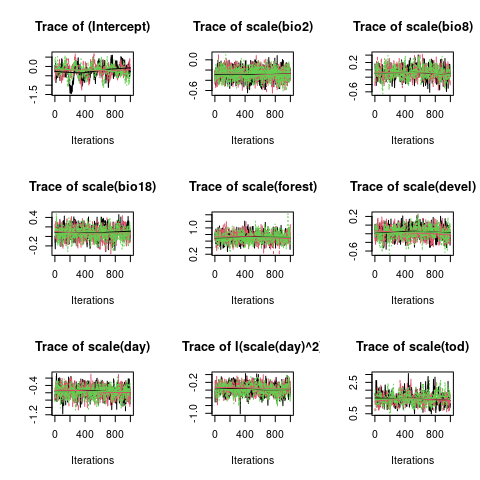
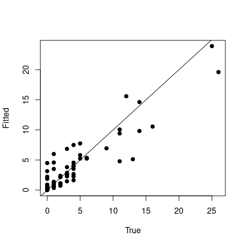
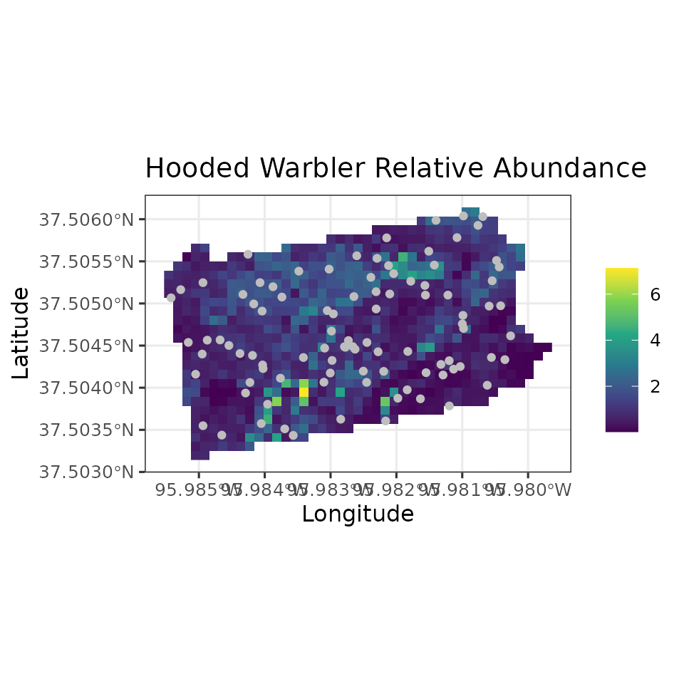
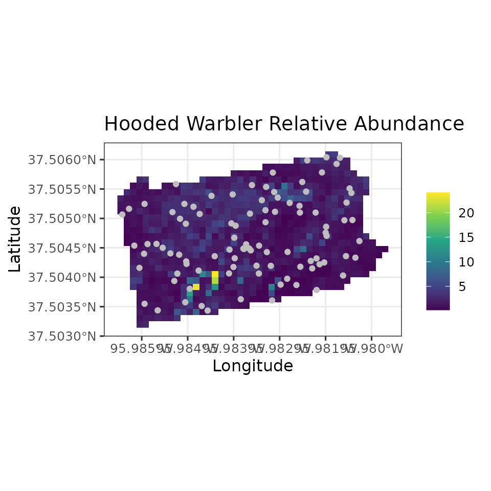
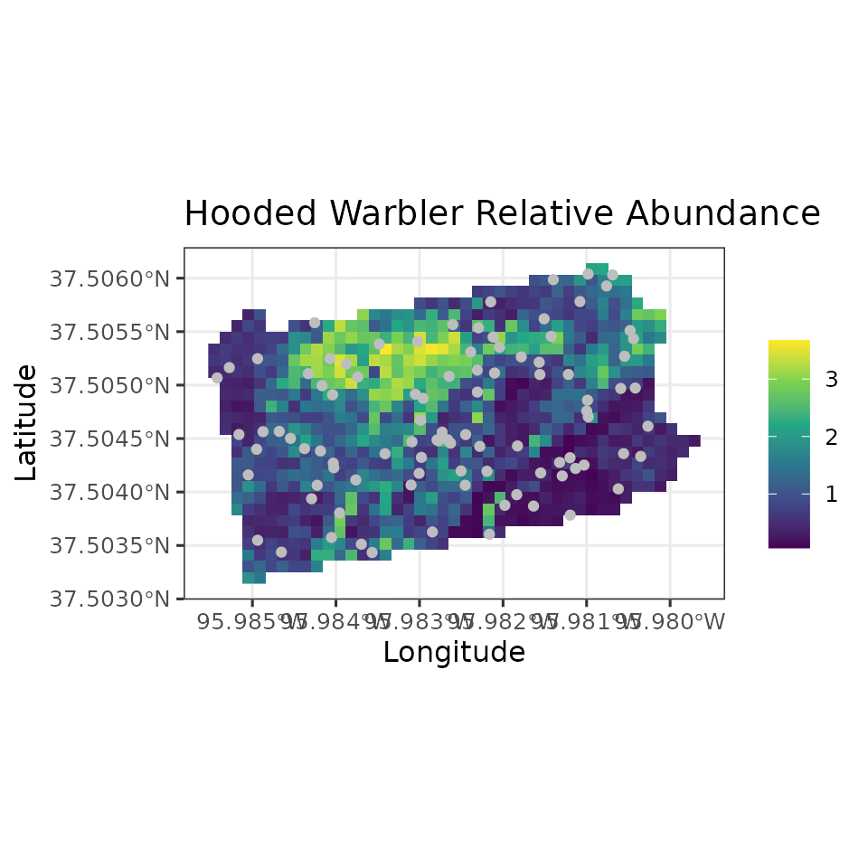
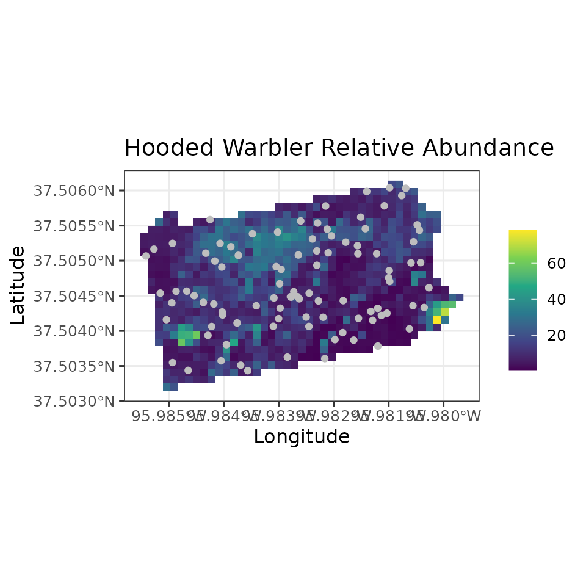
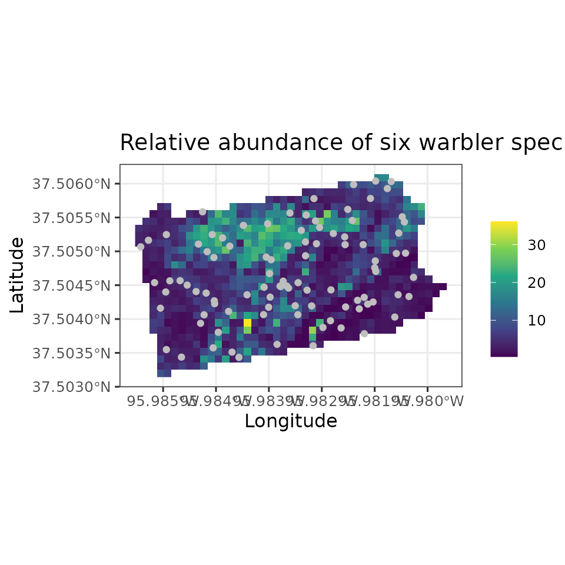
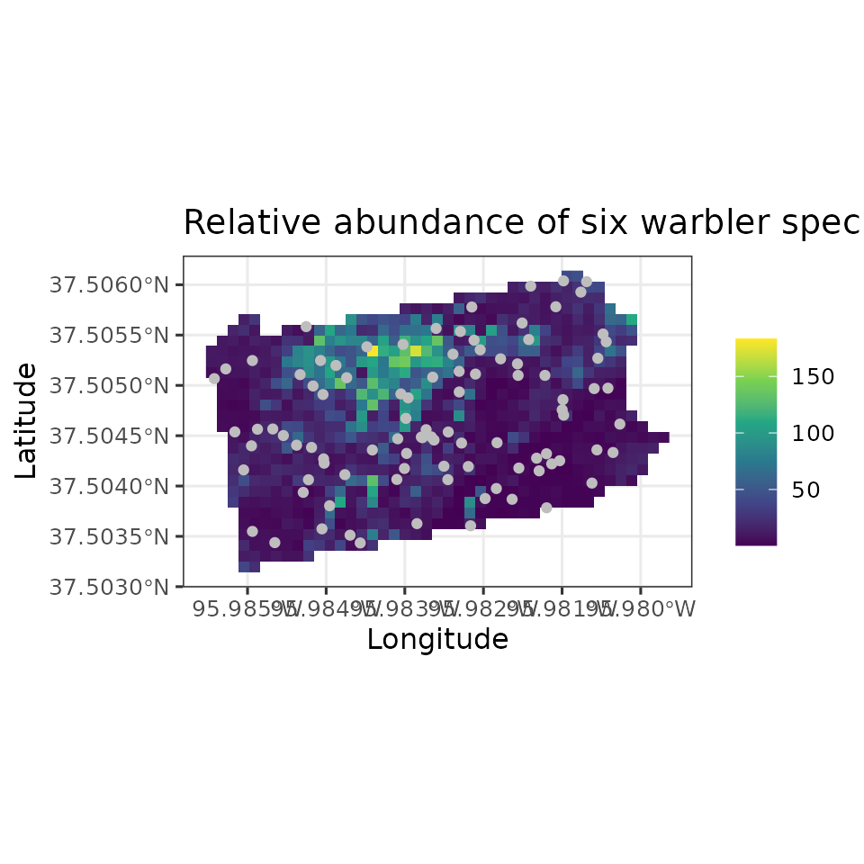
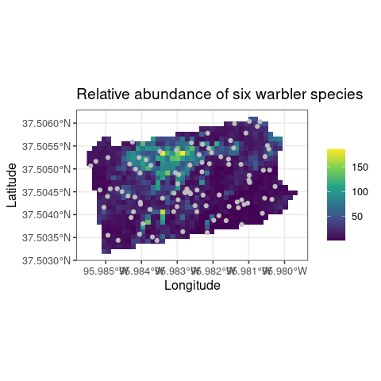

Fitting generalized linear mixed models in spAbundance
Jeffrey W. Doser
2023
Source:vignettes/glmm.Rmd
glmm.RmdIntroduction
This vignette provides worked examples and explanations for fitting
univariate and multivariate generalized linear mixed models in the
spAbundance R package. We will provide step by step
examples on how to fit the following models:
- Univariate GLMM using
abund(). - Spatial univariate GLMM using
spAbund(). - Multivariate GLMM using
msAbund(). - Multivariate GLMM with residual correlations using
lfMsAbund(). - Spatial multivariate GLMM with residual correlations using
sfMsAbund().
In this vignette we are only describing spAbundance
functionality to fit generalized linear (mixed) models (GLMMs), with
separate vignettes on fitting hierarchical
distance sampling models and N-mixture
models. We fit all models in a Bayesian framework using custom
Markov chain Monte Carlo (MCMC) samplers written in C/C++
and called through R’s foreign language interface. Here we
will provide a brief description of each model, with full statistical
details provided in a separate vignette. As with all model types in
spAbundance, we will show how to perform posterior
predictive checks as a Goodness of Fit assessment, model
comparison/selection using the Widely Applicable Information Criterion
(WAIC), and out-of-sample predictions using standard R helper functions
(e.g., predict()). Note that syntax of GLMMs in
spAbundance closely follows syntax for fitting occupancy
models in spOccupancy (Doser et al.
2022), and that this vignette closely follows the documentation
on the spOccupancy
website.
Note that when we discuss GLMMs, we use the terms “univariate” and
“multivariate” instead of “single-species” and “multi-species” as we do
when discussing N-mixture models, hierarchical distance sampling models,
and occupancy models. We use these potentially less-straightforward
terms to highlight the fact that the GLMM functionality in
spAbundance is not restricted to working only with data on
counts of “species”. Rather, the GLMM functionality in
spAbundance can be used to model any sort of response that
you could imagine fitting in a GLMM. Despite this, we will often use the
term “species” when referring to the different response variables that
we can model using the GLMM functionality in spAbundance,
since modeling patterns in abundance is the primary purpose of the
package.
To get started, we load the spAbundance package, as well
as the coda package, which we will use for some MCMC
summary and diagnostics. We will also use the stars and
ggplot2 packages to create some basic plots of our results.
We then set a seed so you can reproduce the same results as we do.
Example data set: Six warbler species from the Breeding Bird Survey
As an example data set throughout this vignette, we will use count
data from the North American Breeding Bird Survey collected in 2018 in
Pennsylvania, USA (Pardieck et al. 2020).
Briefly, these data consist of the total number of individuals for six
bird species (American Redstart, Blackburnian Warbler, Black-throated
Blue Warbler, Black-throated Green Warbler, Hooded Warbler, Magnolia
Warbler) at 95 routes (about 40km long) across Pennsylvania. Additional
details on the data set can be found on the USGS
Science Base website. The data are included as part of the
spAbundance package and are loaded with
data(bbsData). See the manual page using
help(bbsData) for more information.
List of 3
$ y : num [1:6, 1:95] 1 0 0 0 0 0 3 0 1 3 ...
..- attr(*, "dimnames")=List of 2
.. ..$ : chr [1:6] "AMRE" "BLBW" "BTBW" "BTNW" ...
.. ..$ : NULL
$ covs :'data.frame': 95 obs. of 8 variables:
..$ bio2 : num [1:95] 11.6 12.1 10.4 10.4 11.7 ...
..$ bio8 : num [1:95] 20.2 17.8 21.4 21 18.4 ...
..$ bio18 : num [1:95] 473 395 422 361 378 ...
..$ forest: num [1:95] 0.485 0.959 0.717 0.491 0.867 ...
..$ devel : num [1:95] 0.01116 0.00159 0.00319 0.01275 0.00239 ...
..$ day : num [1:95] 147 148 147 148 149 148 149 150 153 154 ...
..$ tod : num [1:95] 534 513 508 518 513 511 516 513 510 505 ...
..$ obs : num [1:95] 51 32 12 10 32 33 15 32 11 32 ...
$ coords: num [1:95, 1:2] 1319 1395 1559 1488 1386 ...
..- attr(*, "dimnames")=List of 2
.. ..$ : NULL
.. ..$ : chr [1:2] "X" "Y"The object bbsData is a list that is structured in the
format needed for multivariate GLMMs in spAbundance.
Specifically, bbsData is a list comprised of the count data
for the six species (y), covariates (covs),
and the spatial coordinates for each site (coords). Note
the coordinates are only required for spatailly-explicit GLMMs. The
matrix y consists of the count data for all 6 species in
the data set, where the rows correspond to species and the columns
correspond to sites. For single-species GLMMs, we will only use data for
one species (Hooded Warbler; HOWA), so we next subset the
bbsData list to only include data from HOWA in a new object
data.HOWA.
sp.names <- dimnames(bbsData$y)[[1]]
data.HOWA <- bbsData
data.HOWA$y <- data.HOWA$y[which(sp.names == "HOWA"), ]
# Observed number of HOWA at each site
data.HOWA$y [1] 0 4 14 1 9 0 11 4 1 6 5 3 4 3 2 26 0 16 12 14 0 3 0 1 1
[26] 5 2 3 4 1 0 2 0 3 1 0 4 2 6 0 0 0 0 0 6 1 0 11 4 0
[51] 0 0 0 0 0 0 4 0 0 0 13 0 0 0 3 0 0 2 11 0 0 4 25 0 0
[76] 0 1 0 5 1 6 0 0 0 0 0 1 1 2 1 1 3 0 2 0We see that HOWA appears to be quite common across the 95 sites, but that there is clear variation in the counts across the state.
Univariate GLMMs
Let \(y_j\) denote the observed count of a species of interest at site \(j = 1, \dots, J\). We model \(y_j\) according to
\[\begin{equation} y_j \sim f(\mu_j, \cdot), \end{equation}\]
where \(f()\) denotes some
probability distribution with mean \(\mu_j\). The \(\cdot\) represents additional dispersion
parameter(s) that are only relevant for certain distributions. In
spAbundance, we allow for \(f()\) to be a Poisson distribution, a
negative binomial (NB) distribution, or a Gaussian (normal)
distribution. The Poisson distribution does not have any additional
parameters. The negative binomial distribution has an additional
positive dispersion parameter \(\kappa\), which controls the amount of
overdispersion in the count data. Smaller values of \(\kappa\) indicate overdispersion in the
count data, while higher values indicate minimal overdispersion in the
counts relative to the Poisson distribution. Note that as \(\kappa \rightarrow \infty\), a NB model
“reverts” back to the simpler Poisson model. The Gaussian distribution
has a variance parameter \(\tau^2\)
that controls the amount of variation in the observed data around the
mean \(\mu_j\).
Following the classic GLM framework, we allow for variation in the mean \(\mu_j\) through the use of a link function \(g()\) following
\[\begin{equation} g(\mu_j) = \boldsymbol{x}_j^\top\boldsymbol{\beta}, \end{equation}\]
where \(\boldsymbol{\beta}\) is a vector of regression coefficients for a set of covariates \(\boldsymbol{x}_j\) (including an intercept). When working with positive integer counts and using the Poisson or negative binomial distributions, we use a log link function. For Gaussian data, we use the identity link function, such that the right hand side of the previous equation simplifies to \(\mu_j\) and covariates are directly related to the mean. Note that while not shown, unstructured random intercepts and slopes can be included in the equation for expected abundance. This may for instance be required for accommodating some sorts of “blocks”, such as when sites are nested in a number of different regions.
To complete the Bayesian specification of the model, we assign Gaussian priors for the regression coefficients (\(\boldsymbol{\beta}\)), a uniform prior for the negative binomial dispersion parameter \(\kappa\) (when applicable), and an inverse-Gamma prior for the Gaussian variance parameter \(\tau^2\) (when applicable).
Fitting univariate GLMMs with abund()
The abund() function fits univariate abundance models.
abund has the following arguments.
abund(formula, data, inits, priors, tuning,
n.batch, batch.length, accept.rate = 0.43, family = 'Poisson',
n.omp.threads = 1, verbose = TRUE,
n.report = 100, n.burn = round(.10 * n.batch * batch.length), n.thin = 1,
n.chains = 1, save.fitted = TRUE, ...)The first argument formula uses standard R model syntax
to denote the covariates to be included in the model. Only the right
hand side of the formula is included. Random intercepts and slopes can
be included in the model using lme4 syntax (Bates et al. 2015). For example, to include a
random intercept for different observers in the model to account for
observational variability, we would include (1 | observer)
in formula, where observer indicates the
specific observer for each data point. The names of variables given in
the formulas should correspond to those found in data,
which is a list consisting of the following tags: y (count
data) and covs (covariates). y is the vector
of count data with length equal to the number of sites in the data set
and covs is a matrix or data frame with site-specific
covariate values. Note the tag offset can also be specified
to include an offset in the model when using a negative binomial or
Poisson distribution.
The data.HOWA list is already in the required format for
use with the abund() function. Here we will model abundance
as a function of three “bioclim” bioclimatic variables and the
proportion of forest and developed land within 5km of the route starting
location. We will also include a few variables that we believe may
relate to observational variability (e.g., imperfect detection) in the
count data. Including such variables in a GLMM is a common approach for
modeling relative abundance, particularly when using BBS data (Link and Sauer 2002). Here we include linear
and quadratic effects of the day of year, a linear effect of time of
day, and a random effect of observer, all of which we think may
influence relative abundance. We standardize all continuous covariates
by using the scale() function in our model specification
(note that standardizing continuous covariates is highly recommended as
it helps aid convergence of the underlying MCMC algorithms):
howa.formula <- ~ scale(bio2) + scale(bio8) + scale(bio18) + scale(forest) +
scale(devel) + scale(day) + I(scale(day)^2) + scale(tod) +
(1 | obs)The family argument is used to specify the specific
family we will use to model the data. Valid options are
Poisson, NB (negative binomial), and
Gaussian. Here we are working with count data, and so both
the Poisson and negative binomial distributions make sense. We will
start working with a Poisson distribution, but later we will compare
this to a negative binomial distribution to determine the amount of
overdispersion in the data.
howa.family <- 'Poisson'Next, we specify the initial values for the MCMC sampler in
inits. abund() (and all other
spAbundance model fitting functions) will set initial
values by default, but here we will do this explicitly, since in more
complicated cases setting initial values close to the presumed solutions
can be vital for success of an MCMC-based analysis (for instance, this
is the case when fitting distance sampling models in
spAbundance). However, for all models described in this
vignette (in particular the non-spatial models), choice of the initial
values is largely inconsequential, with the exception being that
specifying initial values close to the presumed solutions can decrease
the amount of samples you need to run to arrive at convergence of the
MCMC chains. Thus, when first running a model in
spAbundance, we recommend fitting the model using the
default initial values that spAbundance provides. The
initial values that spAbundance chooses will be reported to
the screen when setting verbose = TRUE. After running the
model for a reasonable period, if you find the chains are taking a long
time to reach convergence, you then may wish to set the initial values
to the mean estimates of the parameters from the initial model fit, as
this will likely help reduce the amount of time you need to run the
model.
The default initial values for regression coefficients (including the
intercepts) are random values from a standard normal distribution. When
fitting a GLMM with a negative binomial distribution, the initial value
for the overdispersion parameter is drawn from the prior distribution.
When using a Gaussian distribution, the initial value for the variance
parameter is a random value between 0.5 and 10. Initial values are
specified in a list with the following tags: beta
(intercept and regression coefficients), kappa (negative
binomial overdispersion parameter), tau.sq (Gaussian
variance parameter). For the regression coefficients beta,
the initial values are passed either as a vector of length equal to the
number of estimated parameters (including an intercept, and in the order
specified in the model formula), or as a single value if setting the
same initial value for all parameters (including the intercept). Below
we take the latter approach. For the negative binomial overdispersion
parameter and Gaussian variance parameter, the initial value is simply a
single numeric value. For any random effects that are included in the
model, we can also specify the initial values for the random effect
variances (sigma.sq.mu). By default, these will be drawn as
random values between 0.5 and 10. Here we specify the initial value for
the random effect variance to 1.
inits <- list(beta = 0, kappa = 1, sigma.sq.mu = 1)We next specify the priors for the regression coefficients, as well
as the negative binomial overdispersion parameter. We assume normal
priors for regression coefficients. These priors are specified in a list
with tags beta.normal (including intercepts). Each list
element is then itself a list, with the first element of the list
consisting of the hypermeans for each coefficient and the second element
of the list consisting of the hypervariances for each coefficient.
Alternatively, the hypermeans and hypervariances can be specified as a
single value if the same prior is used for all regression coefficients.
By default, spAbundance will set the hypermeans to 0 and
the hypervariances to 100. For the negative binomial overdispersion
parameter, we will use a uniform prior. This prior is specified as a tag
in the prior list called kappa.unif, which should be a
vector with two values indicating the lower and upper bound of the
uniform distribution. The default prior is to set the lower bound to 0
and the upper bound to 100. Recall that lower values of
kappa indicate substantial overdispersion and high values
of kappa indicate minimal overdispersion. If there is
little support for overdispersion when fitting a negative binomial
model, we will likely see the estimates of kappa be close
to the upper bound of the uniform prior distribution. For the default
prior distribution, if the estimates of kappa are very
close to 100, this indicates little support for overdispersion in the
model, and we can likely switch to using a Poisson distribution (which
would also likely be favored by model comparison approaches). For models
with random effects, we can also specify the prior for the random effect
variance parameter (sigma.sq.mu). We assume inverse-Gamma
priors for these variance parameters and specify them with the tags
sigma.sq.mu.ig. These priors are set as a list with two
components, where the first element is the shape parameter and the
second element is the scale parameter. The shape and scale parameters
can be specified as a single value or as vectors with length equal to
the number of random effects included in the model. The default prior
distribution for random effect variances is 0.1 for both the shape and
scale parameters. When fitting GLMMs with a Gaussian distribution, the
tag tau.sq.ig is used to specify the inverse-Gamma prior
for the variance parameter of the Gaussian distribution. The prior is
specified as a vector of length two, with the first element being the
inverse-Gamma shape parameter and second element being the inverse-Gamma
scale parameter. By default, these values are both set to 0.01. Below we
use default priors for all parameters, but specify them explicitly for
clarity.
priors <- list(beta.normal = list(mean = 0, var = 100),
kappa.unif = c(0, 100),
sigma.sq.mu.ig = list(0.1, 0.1))The next four arguments (tuning, n.batch,
batch.length, and accept.rate) are all related
to the specific type of MCMC sampler we use when we fit GLMMs in
spAbundance. Most parameters in GLMMs are estimated using a
Metropolis-Hastings step, which can often be slow and inefficient,
leading to slow mixing and convergence of the MCMC chains. To try and
mitigate the slow mixing and convergence issues, we update all
parameters in GLMMs using an algorithm called an adaptive
Metropolis-Hastings algorithm (see Roberts and
Rosenthal (2009) for more details on this algorithm). In this
approach, we break up the total number of MCMC samples into a set of
“batches”, where each batch has a specific number of MCMC samples. Thus,
we must specify the total number of batches (n.batch) as
well as the number of MCMC samples each batch contains
(batch.length) when specifying the function arguments. The
total number of MCMC samples is n.batch * batch.length.
Typically, we set batch.length = 25 and then play around
with n.batch until convergence of all model parameters is
reached. We generally recommend setting batch.length = 25,
but in certain situations this can be increased to a larger number of
samples (e.g., 100), which can result in moderate decreases in run time.
Here we set n.batch = 800 for a total of 20,000 MCMC
samples for each MCMC chain we run.
batch.length <- 25
n.batch <- 800
# Total number of MCMC samples per chain
batch.length * n.batch[1] 20000Importantly, we also need to specify a target acceptance rate and
initial tuning parameters for the regression coefficients (and the
negative binomial overdispersion parameter and any latent random effects
if applicable). These are both features of the adaptive algorithm we use
to sample these parameters. In this adaptive Metropolis-Hastings
algorithm, we propose new values for the parameters from some proposal
distribution, compare them to our previous values, and use a statistical
algorithm to determine if we should accept the new proposed value or
keep the old one. The accept.rate argument specifies the
ideal proportion of times we will accept the newly proposed values for
these parameters. Roberts and Rosenthal
(2009) show that if we accept new values around 43% of the time,
then this will lead to optimal mixing and convergence of the MCMC
chains. Following these recommendations, we should strive for an
algorithm that accepts new values about 43% of the time. Thus, we
recommend setting accept.rate = 0.43 unless you have a
specific reason not to (this is the default value). The values specified
in the tuning argument help control the initial values we
will propose for the abundance/detection coefficients and the negative
binomial overdispersion parameter. These values are supplied as input in
the form of a list with tags beta and kappa.
The initial tuning value can be any value greater than 0, but we
generally recommend starting the value out around 0.5. These tuning
values can also be thought of as tuning “variances”, as it is these
values that control the variance of the distribution we use to generate
newly proposed values for the parameters we are trying to estimate with
our MCMC algorithm. In short, the new values that we propose for the
parameters beta and kappa come from a normal
distribution with mean equal to the current value for the given
parameter and the variance equal to the tuning parameter (with a
transformation for kappa since it can only take positive
values). Thus, the smaller this tuning parameter/variance is, the closer
our proposed values will be to the current value, and vise versa for
large values of the tuning parameter. The “ideal” value of the tuning
variance will depend on the data set, the parameter, and how much
uncertainty there is in the estimate of the parameter. This initial
tuning value that we supply is the first tuning variance that will be
used for the given parameter, and our adaptive algorithm will adjust
this tuning parameter after each batch to yield acceptance rates of
newly proposed values that are close to our target acceptance rate that
we specified in the accept.rate argument. Information on
the acceptance rates for a few of the parameters in your model will be
displayed when setting verbose = TRUE. After some initial
runs of the model, if you notice the final acceptance rate is much
larger or smaller than the target acceptance rate
(accept.rate), you can then change the initial tuning value
to get closer to the target rate. While use of this algorithm requires
us to specify more arguments than if we didn’t “adaptively tune” our
proposal variances, this leads to much shorter run times compared to a
more simplistic approach where we do not have an “adaptive” sampling
approach, and it should thus save us time in the long haul when waiting
for these models to run. For our example here, we set the initial tuning
values to 0.5 for beta and kappa. For models
with random effects in either the abundance or detection portions of the
model, we also need to specify tuning parameters for the latent random
effect values (beta.star). We similarly set these to 0.5.
Note that for Gaussian GLMMs, we use much more efficient algorithms
(Gibbs updates).
tuning <- list(beta = 0.5, kappa = 0.5, beta.star = 0.5)
# accept.rate = 0.43 by default, so we do not specify it.We also need to specify the length of burn-in (n.burn),
the rate at which we want to thin the posterior samples
(n.thin), and the number of MCMC chains to run
(n.chains). Note that currently spAbundance
runs multiple chains sequentially and does not allow chains to be run
simultaneously in parallel across multiple threads, which is something
we hope to implement in future package development. Instead, we allow
for within-chain parallelization using the n.omp.threads
argument. We can set n.omp.threads to a number greater than
1 and smaller than the number of threads on the computer you are using.
Generally, setting n.omp.threads > 1 will not result in
decreased run times for non-spatial models in spAbundance,
but can substantially decrease run time when fitting spatial models
(Finley, Datta, and Banerjee 2020). Here
we set n.omp.threads = 1.
For a simple single-species GLMM, we shouldn’t need too many samples and will only need a moderate amount of burn-in and thinning. We will run the model using three chains to assess convergence using the Gelman-Rubin diagnostic (Rhat; Brooks and Gelman (1998)).
n.burn <- 10000
n.thin <- 10
n.chains <- 3We are now almost set to run the model. The verbose
argument is a logical value indicating whether or not MCMC sampler
progress is reported to the screen. If verbose = TRUE,
sampler progress is reported to the screen. The argument
n.report specifies the interval to report the
Metropolis-Hastings sampler acceptance rate. Note that
n.report is specified in terms of batches, not the overall
number of samples. Below we set n.report = 200, which will
result in information on the acceptance rate and tuning parameters every
200th batch (not sample).
We now are set to fit the model.
out <- abund(formula = howa.formula,
data = data.HOWA,
inits = inits,
priors = priors,
n.batch = n.batch,
batch.length = batch.length,
tuning = tuning,
n.omp.threads = 1,
n.report = 200,
family = howa.family,
verbose = TRUE,
n.burn = n.burn,
n.thin = n.thin,
n.chains = n.chains)----------------------------------------
Preparing to run the model
----------------------------------------
----------------------------------------
Model description
----------------------------------------
Poisson abundance model fit with 95 sites.
Samples per Chain: 20000 (800 batches of length 25)
Burn-in: 10000
Thinning Rate: 10
Number of Chains: 3
Total Posterior Samples: 3000
Source compiled with OpenMP support and model fit using 1 thread(s).
Adaptive Metropolis with target acceptance rate: 43.0
----------------------------------------
Chain 1
----------------------------------------
Sampling ...
Batch: 200 of 800, 25.00%
Parameter Acceptance Tuning
beta[1] 52.0 0.16152
beta[2] 40.0 0.17150
beta[3] 56.0 0.15518
beta[4] 64.0 0.17850
beta[5] 36.0 0.19728
beta[6] 20.0 0.14615
beta[7] 36.0 0.16152
beta[8] 32.0 0.14042
beta[9] 44.0 0.31250
-------------------------------------------------
Batch: 400 of 800, 50.00%
Parameter Acceptance Tuning
beta[1] 28.0 0.15518
beta[2] 40.0 0.18954
beta[3] 32.0 0.17150
beta[4] 48.0 0.16152
beta[5] 40.0 0.18211
beta[6] 40.0 0.12962
beta[7] 64.0 0.16478
beta[8] 32.0 0.14615
beta[9] 24.0 0.26630
-------------------------------------------------
Batch: 600 of 800, 75.00%
Parameter Acceptance Tuning
beta[1] 32.0 0.15518
beta[2] 60.0 0.17850
beta[3] 36.0 0.17497
beta[4] 60.0 0.14910
beta[5] 52.0 0.18954
beta[6] 44.0 0.14910
beta[7] 36.0 0.17497
beta[8] 44.0 0.14042
beta[9] 40.0 0.28847
-------------------------------------------------
Batch: 800 of 800, 100.00%
----------------------------------------
Chain 2
----------------------------------------
Sampling ...
Batch: 200 of 800, 25.00%
Parameter Acceptance Tuning
beta[1] 48.0 0.15211
beta[2] 52.0 0.17850
beta[3] 44.0 0.17150
beta[4] 52.0 0.16152
beta[5] 24.0 0.19337
beta[6] 32.0 0.14615
beta[7] 44.0 0.18579
beta[8] 52.0 0.12962
beta[9] 48.0 0.30631
-------------------------------------------------
Batch: 400 of 800, 50.00%
Parameter Acceptance Tuning
beta[1] 44.0 0.14910
beta[2] 52.0 0.16478
beta[3] 64.0 0.16152
beta[4] 40.0 0.16152
beta[5] 44.0 0.18954
beta[6] 44.0 0.14910
beta[7] 48.0 0.18211
beta[8] 56.0 0.13224
beta[9] 56.0 0.30631
-------------------------------------------------
Batch: 600 of 800, 75.00%
Parameter Acceptance Tuning
beta[1] 36.0 0.14042
beta[2] 44.0 0.17497
beta[3] 44.0 0.16811
beta[4] 56.0 0.14910
beta[5] 40.0 0.20533
beta[6] 36.0 0.15518
beta[7] 44.0 0.18954
beta[8] 44.0 0.12962
beta[9] 40.0 0.27716
-------------------------------------------------
Batch: 800 of 800, 100.00%
----------------------------------------
Chain 3
----------------------------------------
Sampling ...
Batch: 200 of 800, 25.00%
Parameter Acceptance Tuning
beta[1] 48.0 0.15832
beta[2] 44.0 0.17850
beta[3] 44.0 0.18211
beta[4] 40.0 0.14615
beta[5] 36.0 0.19337
beta[6] 40.0 0.14615
beta[7] 36.0 0.17850
beta[8] 36.0 0.14325
beta[9] 40.0 0.30025
-------------------------------------------------
Batch: 400 of 800, 50.00%
Parameter Acceptance Tuning
beta[1] 40.0 0.15518
beta[2] 44.0 0.15518
beta[3] 44.0 0.16811
beta[4] 28.0 0.16478
beta[5] 52.0 0.19337
beta[6] 56.0 0.14910
beta[7] 52.0 0.17150
beta[8] 60.0 0.14042
beta[9] 32.0 0.25585
-------------------------------------------------
Batch: 600 of 800, 75.00%
Parameter Acceptance Tuning
beta[1] 32.0 0.14325
beta[2] 40.0 0.16152
beta[3] 32.0 0.17150
beta[4] 40.0 0.16811
beta[5] 28.0 0.18579
beta[6] 48.0 0.14910
beta[7] 44.0 0.18954
beta[8] 48.0 0.14042
beta[9] 40.0 0.27168
-------------------------------------------------
Batch: 800 of 800, 100.00%abund() returns a list of class abund with
a suite of different objects, many of them being coda::mcmc
objects of posterior samples. The “Preparing to run the model” section
will print information on default priors or initial values that are used
when they are not specified in the function call. Here we specified
everything explicitly so no information was reported.
We next use the summary() function on the resulting
abund() object for a concise, informative summary of the
regression parameters and convergence of the MCMC chains.
summary(out)
Call:
abund(formula = howa.formula, data = data.HOWA, inits = inits,
priors = priors, tuning = tuning, n.batch = n.batch, batch.length = batch.length,
family = howa.family, n.omp.threads = 1, verbose = TRUE,
n.report = 200, n.burn = n.burn, n.thin = n.thin, n.chains = n.chains)
Samples per Chain: 20000
Burn-in: 10000
Thinning Rate: 10
Number of Chains: 3
Total Posterior Samples: 3000
Run Time (min): 0.1438
Abundance (log scale):
Mean SD 2.5% 50% 97.5% Rhat ESS
(Intercept) -0.2307 0.3418 -0.9519 -0.2144 0.3983 1.0223 130
scale(bio2) -0.2743 0.1144 -0.5063 -0.2754 -0.0534 1.0034 1024
scale(bio8) -0.0837 0.1597 -0.3917 -0.0871 0.2406 1.0014 530
scale(bio18) 0.0744 0.1259 -0.1719 0.0742 0.3220 1.0187 639
scale(forest) 0.7173 0.1454 0.4320 0.7131 1.0037 1.0043 735
scale(devel) -0.1723 0.1381 -0.4488 -0.1689 0.0915 1.0106 544
scale(day) -0.5673 0.1561 -0.8920 -0.5628 -0.2775 1.0073 760
I(scale(day)^2) -0.3732 0.1384 -0.6497 -0.3688 -0.1161 1.0336 652
scale(tod) 1.4681 0.3777 0.8197 1.4307 2.2867 1.0161 315
Abundance Random Effect Variances (log scale):
Mean SD 2.5% 50% 97.5% Rhat ESS
(Intercept)-obs 3.0363 1.131 1.4259 2.8583 5.7909 1.0341 267We see the variable with the largest magnitude effect is time of day with a strong positive effect. Since we believe this variable may relate to the probability of detecting HOWA at a location (or the probability HOWA is singing and thus available for detection), this suggests a larger number of HOWA are counted later in the morning relative to early in the morning. There is also a strong positive relationship with forest cover, suggesting larger HOWA relative abundance in more forested areas.
The model summary also provides information on convergence of the MCMC chains in the form of the Gelman-Rubin diagnostic (Brooks and Gelman 1998) and the effective sample size (ESS) of the posterior samples. Here we find all Rhat values are less than 1.1 and the ESS values are decently large for all parameters.
We can use the plot() function to generate a simple
trace plot of the MCMC chains to provide additional confidence in the
convergence (or non-convergence) of the model. The plotting
functionality for each model type in spAbundance takes
three arguments: x (the resulting object from fitting the
model), param (the parameter name that you want to
display), and density (a logical value indicating whether
to also generate a density plot in addition to the traceplot). To see
the parameter names available to use with plot() for a
given model type, you can look at the manual page for the function,
which for models generated from abund() can be accessed
with ?plot.abund.
# Regression coefficients
plot(out, param = 'beta', density = FALSE)
Posterior predictive checks
The function ppcAbund() performs a posterior predictive
check on all spAbundance model objects as a Goodness-of-Fit
(GOF) assessment. The fundamental idea of GoF testing is that a good
model should generate data that closely align with the observed data. If
there are drastic differences in the true data from the data generated
under the model, our model is likely not very useful (Hobbs and Hooten 2015). For details on
posterior predictive checks, please see this
section in the N-mixture model vignette. Below we perform a
posterior predictive check using a Freeman-Tukey test statistic, and
summarize it with a Bayesian p-value.
Call:
ppcAbund(object = out, fit.stat = "freeman-tukey", group = 0)
Samples per Chain: 20000
Burn-in: 10000
Thinning Rate: 10
Number of Chains: 3
Total Posterior Samples: 3000
Bayesian p-value: 0.001
Fit statistic: freeman-tukey Here our Bayesian p-value is very close to 0, indicating that the current model does not adequately represent the variability in the observed data. We can further look at a plot of the fitted values versus the trues to get a better sense of how our model performed.
# Extract fitted values
y.rep.samples <- fitted(out)
# Get means of fitted values
y.rep.means <- apply(y.rep.samples, 2, mean)
# Simple plot of True vs. fitted values
plot(data.HOWA$y, y.rep.means, pch = 19, xlab = 'True', ylab = 'Fitted')
abline(0, 1)
Looking at this plot, we see our model actually does a decent job of identifying locations with high relative abundance, but there are a few sites with low observed relative abundance for which the model seems to be overestimating abundance (i.e., points to the left of 5 on the x-axis in the above plot). This is likely what is causing the low Bayesian p-value.
Model selection using WAIC
The function waicAbund() calculates the Widely
Applicable Information Criterion as a model selection crtieria. This can
be used to compare a series of candidate models and select the
best-performing model for final analysis. See this
section in the N-mixture model vignette for additional details on
how we calculate WAIC in spAbundance.
We first fit a second model that uses a negative binomial distribution for abundance, and then compare the two models using WAIC.
out.nb <- abund(formula = howa.formula,
data = data.HOWA,
inits = inits,
priors = priors,
n.batch = n.batch,
batch.length = batch.length,
tuning = tuning,
n.omp.threads = 1,
n.report = 200,
family = 'NB',
verbose = FALSE,
n.burn = n.burn,
n.thin = n.thin,
n.chains = n.chains)
# Poisson model
waicAbund(out) elpd pD WAIC
-133.44441 52.16574 371.22031
# NB model
waicAbund(out.nb) elpd pD WAIC
-164.09803 22.47421 373.14447 Here we see the WAIC values are essentially identical, and so we select the simpler model (the Poisson model) as the prefered model.
Prediction
All model objects from a call to spAbundance
model-fitting functions can be used with predict() to
generate a series of posterior predictive samples at new locations,
given the values of all covariates used in the model fitting process.
Here we will predict relative abundance of HOWA across the state of
Pennsylvania at a 12km resolution. The prediction data are stored in the
bbsPredData object, which is available in
spAbundance.
'data.frame': 816 obs. of 7 variables:
$ bio2 : num 10.44 10.28 10.42 9.41 10.72 ...
$ bio8 : num 17.8 17.5 18.3 18.2 17.9 ...
$ bio18 : num 383 392 341 425 490 ...
$ forest: num 0.898 0.906 0.665 0.737 0.79 ...
$ devel : num 0.000797 0.002392 0 0.002392 0 ...
$ x : num 1669 1681 1609 1621 1633 ...
$ y : num 682 682 670 670 670 ...The prediction data consist of 816 12km cells in which we will predict HOWA relative abundance. The data frame consists of the spatial coordinates for each cell and the bioclimatic and landcover covariates we used to fit the model. We will set the values of the covariates related to observational variability to their mean value to generate our relative abundance estimates, and also will set the random observer effect to 0 at each prediction location.
Given that we standardized the covariate values when we fit the model, we need to standardize the covariate values for prediction using the exact same values of the mean and standard deviation of the covariate values used to fit the data.
# Center and scale covariates by values used to fit model
bio2.pred <- (bbsPredData$bio2 - mean(data.HOWA$covs$bio2)) /
sd(data.HOWA$covs$bio2)
bio8.pred <- (bbsPredData$bio8 - mean(data.HOWA$covs$bio8)) /
sd(data.HOWA$covs$bio8)
bio18.pred <- (bbsPredData$bio18 - mean(data.HOWA$covs$bio18)) /
sd(data.HOWA$covs$bio18)
forest.pred <- (bbsPredData$forest - mean(data.HOWA$covs$forest)) /
sd(data.HOWA$covs$forest)
devel.pred <- (bbsPredData$devel - mean(data.HOWA$covs$devel)) /
sd(data.HOWA$covs$devel)
day.pred <- 0
tod.pred <- 0For abund(), the predict() function takes
four arguments:
-
object: theabundfitted model object. -
X.0: a matrix or data frame consisting of the design matrix for the prediction locations (which must include an intercept if our model contained one). -
ignore.RE: a logical value indicating whether or not to remove random effects from the predicted values (this is equivalent to setting the random effect value to 0 at each location). By default, this is set toFALSE, and so prediction will include the random effects (if any are specified).
Below we form the design matrix and predict relative abundance across the grid.
X.0 <- cbind(1, bio2.pred, bio8.pred, bio18.pred, forest.pred,
devel.pred, day.pred, day.pred^2, tod.pred)
colnames(X.0) <- c('(Intercept)', 'scale(bio2)', 'scale(bio8)', 'scale(bio18)',
'scale(forest)', 'scale(devel)', 'scale(day)',
'I(scale(day)^2)', 'scale(tod)')
out.pred <- predict(out, X.0, ignore.RE = TRUE)
str(out.pred)List of 3
$ mu.0.samples: num [1:3000, 1:816, 1] 2.49 2.47 3.49 3.96 4.09 ...
$ y.0.samples : int [1:3000, 1:816, 1] 2 3 5 2 4 2 4 2 7 4 ...
$ call : language predict.abund(object = out, X.0 = X.0, ignore.RE = TRUE)
- attr(*, "class")= chr "predict.abund"The resulting object consists of posterior predictive samples for the
expected relative abundances (mu.0.samples) and relative
abundance values (y.0.samples). The beauty of the Bayesian
paradigm, and the MCMC computing machinery, is that these predictions
all have fully propagated uncertainty. Below, we produce a map of HOWA
relative abundance across the state, as well as a map of the
uncertainty, where here we represent uncertainty with the width of the
95% credible interval. We will also plot the coordinates of the actual
data locations to show where the data we used to fit the model relate to
the overall predictions across the state.
mu.0.quants <- apply(out.pred$mu.0.samples, 2, quantile, c(0.025, 0.5, 0.975))
plot.df <- data.frame(Easting = bbsPredData$x,
Northing = bbsPredData$y,
mu.0.med = mu.0.quants[2, ],
mu.0.ci.width = mu.0.quants[3, ] - mu.0.quants[1, ])
# proj4string for the coordinate reference system
my.crs <- "+proj=aea +lat_1=29.5 +lat_2=45.5 +lat_0=37.5 +lon_0=-96 +x_0=0 +y_0=0 +datum=NAD83 +units=m +no_defs"
coords.stars <- st_as_stars(plot.df, crs = my.crs)
coords.sf <- st_as_sf(as.data.frame(data.HOWA$coords), coords = c('X', 'Y'),
crs = my.crs)
# Plot of median estimate
ggplot() +
geom_stars(data = coords.stars, aes(x = Easting, y = Northing, fill = mu.0.med)) +
geom_sf(data = coords.sf, col = 'grey') +
scale_fill_viridis_c(na.value = NA) +
theme_bw(base_size = 12) +
labs(fill = '', x = 'Longitude', y = 'Latitude',
title = 'Hooded Warbler Relative Abundance')
# Plot of 95% CI width
ggplot() +
geom_stars(data = coords.stars, aes(x = Easting, y = Northing, fill = mu.0.ci.width)) +
geom_sf(data = coords.sf, col = 'grey') +
scale_fill_viridis_c(na.value = NA) +
theme_bw(base_size = 12) +
labs(fill = '', x = 'Longitude', y = 'Latitude',
title = 'Hooded Warbler Relative Abundance')
Univariate spatial GLMMs
Basic model description
When working across large spatial domains, accounting for residual spatial autocorrelation in species distributions can often improve predictive performance of a model, leading to more accurate predictions of species abundance patterns (Guélat and Kéry 2018). We here extend the previous GLMM to incorporate a spatial random effect that accounts for unexplained spatial variation in species abundance across a region of interest (Diggle 1998). Let \(\boldsymbol{s}_j\) denote the geographical coordinates of site \(j\) for \(j = 1, \dots, J\). In all spatially-explicit models, we include \(\boldsymbol{s}_j\) directly in the notation of spatially-indexed variables to indicate the model is spatially-explicit. More specifically, the expected abundance at site \(j\) with coordinates \(\boldsymbol{s}_j\), \(\mu(\boldsymbol{s}_j)\), now takes the form
\[\begin{equation} g(\mu(\boldsymbol{s}_j)) = \boldsymbol{x}(\boldsymbol{s}_j)^{\top}\boldsymbol{\beta} + \text{w}(\boldsymbol{s}_j), \end{equation}\]
where \(\text{w}(\boldsymbol{s}_j)\) is a spatial random effect modeled with a Nearest Neighbor Gaussian Process (NNGP; Datta et al. (2016)). More specifically, we have
\[\begin{equation} \textbf{w}(\boldsymbol{s}) \sim N(\boldsymbol{0}, \boldsymbol{\tilde{\Sigma}}(\boldsymbol{s}, \boldsymbol{s}', \boldsymbol{\theta})), \end{equation}\]
where \(\boldsymbol{\tilde{\Sigma}}(\boldsymbol{s}, \boldsymbol{s}', \boldsymbol{\theta})\) is the NNGP-derived spatial covariance matrix that originates from the full \(J \times J\) covariance matrix \(\boldsymbol{\Sigma}(\boldsymbol{s}, \boldsymbol{s}', \boldsymbol{\theta})\) that is a function of the distances between any pair of site coordinates \(\boldsymbol{s}\) and \(\boldsymbol{s}'\) and a set of parameters \((\boldsymbol{\theta})\) that govern the spatial process. The vector \(\boldsymbol{\theta}\) is equal to \(\boldsymbol{\theta} = \{\sigma^2, \phi, \nu\}\), where \(\sigma^2\) is a spatial variance parameter, \(\phi\) is a spatial decay parameter, and \(\nu\) is a spatial smoothness parameter. \(\nu\) is only specified when using a Matern correlation function. The detection portion of the N-mixture model remains unchanged from the non-spatial N-mixture model. The NNGP is a computationally efficient alternative to working with a full Gaussian process model, which is notoriously slow for even moderately large data sets. See Datta et al. (2016) and Finley et al. (2019) for complete statistical details on the NNGP.
Fitting univariate spatial GLMMs with spAbund()
We will fit the same univariate GLMM that we fit previously using
abund(), but we will now make the model spatially-explicit
by incorporating a spatial process with spAbund(), which
has the following arguments:
spAbund(formula, data, inits, priors, tuning,
cov.model = 'exponential', NNGP = TRUE,
n.neighbors = 15, search.type = 'cb',
n.batch, batch.length, accept.rate = 0.43, family = 'Poisson',
n.omp.threads = 1, verbose = TRUE, n.report = 100,
n.burn = round(.10 * n.batch * batch.length), n.thin = 1,
n.chains = 1, save.fitted = TRUE, ...)The arguments to spAbund() are very similar to those we
saw with abund(), with a few additional components. The
formula and data arguments are the same as
before, with random slopes and intercepts allowed in both the abundance
and detection models. Notice the coords matrix in the
data.HOWA list of data. We did not use this for
abund(), but specifying the spatial coordinates in
data is necessary for all spatially explicit models in
spAbundance.
howa.formula <- ~ scale(bio2) + scale(bio8) + scale(bio18) + scale(forest) +
scale(devel) + scale(day) + I(scale(day)^2) + scale(tod) +
(1 | obs)
str(data.HOWA) # coords is required for spAbund()List of 3
$ y : num [1:95] 0 4 14 1 9 0 11 4 1 6 ...
$ covs :'data.frame': 95 obs. of 8 variables:
..$ bio2 : num [1:95] 11.6 12.1 10.4 10.4 11.7 ...
..$ bio8 : num [1:95] 20.2 17.8 21.4 21 18.4 ...
..$ bio18 : num [1:95] 473 395 422 361 378 ...
..$ forest: num [1:95] 0.485 0.959 0.717 0.491 0.867 ...
..$ devel : num [1:95] 0.01116 0.00159 0.00319 0.01275 0.00239 ...
..$ day : num [1:95] 147 148 147 148 149 148 149 150 153 154 ...
..$ tod : num [1:95] 534 513 508 518 513 511 516 513 510 505 ...
..$ obs : num [1:95] 51 32 12 10 32 33 15 32 11 32 ...
$ coords: num [1:95, 1:2] 1319 1395 1559 1488 1386 ...
..- attr(*, "dimnames")=List of 2
.. ..$ : NULL
.. ..$ : chr [1:2] "X" "Y"The initial values (inits) are again specified in a
list. Valid tags for initial values now additionally include the
parameters associated with the spatial random effects. These include:
sigma.sq (spatial variance parameter), phi
(spatial decay parameter), w (the latent spatial random
effects at each site), and nu (spatial smoothness
parameter), where the latter is only specified if adopting a Matern
covariance function (i.e., cov.model = 'matern').
spAbundance supports four spatial covariance models
(exponential, spherical,
gaussian, and matern), which are specified in
the cov.model argument. Throughout this vignette, we will
use an exponential covariance model, which we often use as our default
covariance model when fitting spatially-explicit models and is commonly
used throughout ecology. To determine which covariance function to use,
we can fit models with the different covariance functions and compare
them using WAIC to select the best performing function. We will note
that the Matern covariance function has the additional spatial
smoothness parameter \(\nu\) and thus
can often be more flexible than the other functions. However, because we
need to estimate an additional parameter, this also tends to require
more data (i.e., a larger number of sites) than the other covariance
functions, and so we encourage use of the three simpler functions if
your data set is sparse. We note that model estimates are generally
fairly robust to the different covariance functions, although certain
functions may provide substantially better estimates depending on the
specific form of the underlying spatial autocorrelation in the data.
The default initial values for phi, and nu
are set to random values from the prior distribution, while the default
initial value for sigma.sq is set to a random value between
0.05 and 3. In all spatially-explicit models described in this vignette,
the spatial decay parameter phi is often the most sensitive
to initial values. In general, the spatial decay parameter will often
have poor mixing and take longer to converge than the rest of the
parameters in the model, so specifying an initial value that is
reasonably close to the resulting value can really help decrease run
times for complicated models. As an initial value for the spatial decay
parameter phi, we compute the mean distance between points
in our coordinates matrix and then set it equal to 3 divided by this
mean distance. When using an exponential covariance function, \(\frac{3}{\phi}\) is the effective range, or
the distance at which the residual spatial correlation between two sites
drops to 0.05 (Banerjee, Carlin, and Gelfand
2003). Thus our initial guess for this effective range is the
average distance between sites across the simulated region. As with all
other parameters, we generally recommend using the default initial
values for an initial model run, and if the model is taking a very long
time to converge you can rerun the model with initial values based on
the posterior means of estimated parameters from the initial model fit.
For the spatial variance parameter sigma.sq, we set the
initial value to 1. This corresponds to a moderate amount of spatial
variance. Further, we set the initial values of the latent spatial
random effects at each site to 0. The initial values for these random
effects has an extremely small influence on the model results, so we
generally recommend setting their initial values to 0 as we have done
here (this is also the default). However, if you are running your model
for a very long time and are seeing very slow convergence of the MCMC
chains, setting the initial values of the spatial random effects to the
mean estimates from a previous run of the model could help reach
convergence faster.
# Pair-wise distances between all sites
dist.mat <- dist(data.HOWA$coords)
# Exponential covariance model
cov.model <- 'exponential'
# Specify list of inits
inits <- list(beta = 0, kappa = 0.5, sigma.sq.mu = 0.5, sigma.sq = 1,
phi = 3 / mean(dist.mat),
w = rep(0, length(data.HOWA$y)))The parameter NNGP is a logical value that specifies
whether we want to use an NNGP to fit the model. Currently, only
NNGP = TRUE is supported, but we may eventually add
functionality to fit full Gaussian Process models. The arguments
n.neighbors and search.type specify the number
of neighbors used in the NNGP and the nearest neighbor search algorithm,
respectively, to use for the NNGP model. Generally, the default values
of these arguments will be adequate. Datta et al.
(2016) showed that setting n.neighbors = 15 is
usually sufficient, although for certain data sets a good approximation
can be achieved with as few as five neighbors, which could substantially
decrease run time for the model. We generally recommend leaving
search.type = "cb", as this results in a fast code book
nearest neighbor search algorithm. However, details on when you may want
to change this are described in Finley, Datta,
and Banerjee (2020). We will run an NNGP model using the default
value for search.type and setting
n.neighbors = 15 (both the defaults).
NNGP <- TRUE
n.neighbors <- 15
search.type <- 'cb'Priors are again specified in a list in the argument
priors. We follow standard recommendations for prior
distributions from the spatial statistics literature (Banerjee, Carlin, and Gelfand 2003). We assume
an inverse gamma prior for the spatial variance parameter
sigma.sq (the tag of which is sigma.sq.ig),
and uniform priors for the spatial decay parameter phi and
smoothness parameter nu (if using the Matern correlation
function), with the associated tags phi.unif and
nu.unif. The hyperparameters of the inverse Gamma are
passed as a vector of length two, with the first and second elements
corresponding to the shape and scale, respectively. The lower and upper
bounds of the uniform distribution are passed as a two-element vector
for the uniform priors. We also allow users to restrict the spatial
variance further by specifying a uniform prior (with the tag
sigma.sq.unif), which can potentially be useful to place a
more informative prior on the spatial parameters. Generally, we use an
inverse-Gamma prior.
Note that the priors for the spatial parameters in a
spatially-explicit model must be at least weakly informative for the
model to converge (Banerjee, Carlin, and Gelfand
2003). For the inverse-Gamma prior on the spatial variance, we
typically set the shape parameter to 2 and the scale parameter equal to
our best guess of the spatial variance. The default prior hyperparameter
values for the spatial variance \(\sigma^2\) are a shape parameter of 2 and a
scale parameter of 1. This weakly informative prior suggests a prior
mean of 1 for the spatial variance, which is a moderately small amount
of spatial variation. Here we will use this default prior. For the
spatial decay parameter, our default approach is to set the lower and
upper bounds of the uniform prior based on the minimum and maximum
distances between sites in the data. More specifically, by default we
set the lower bound to 3 / max and the upper bound to
3 / min, where min and max are
the minimum and maximum distances between sites in the data set,
respectively. This equates to a vague prior that states the spatial
autocorrelation in the data could only exist between sites that are very
close together, or could span across the entire observed study area. If
additional information is known on the extent of the spatial
autocorrelation in the data, you may place more restrictive bounds on
the uniform prior, which would reduce the amount of time needed for
adequate mixing and convergence of the MCMC chains. Here we use this
default approach, but will explicitly set the values for
transparency.
min.dist <- min(dist.mat)
max.dist <- max(dist.mat)
priors <- list(beta.normal = list(mean = 0, var = 100),
kappa.unif = c(0, 100),
sigma.sq.mu.ig = list(0.1, 0.1),
sigma.sq.ig = c(2, 1),
phi.unif = c(3 / max.dist, 3 / min.dist))We again split our MCMC algorithm up into a set of batches and use an
adaptive sampler to adaptively tune the variances that we propose new
values from. We specify the initial tuning values again in the
tuning argument, and now need to add phi and
w to the parameters that must be tuned. Note that we do not
need to add sigma.sq, as this parameter can be sampled with
a more efficient approach (i.e., it’s full conditional distribution is
available in closed form).
tuning <- list(beta = 0.5, kappa = 0.5, beta.star = 0.5, w = 0.5, phi = 0.5)The argument n.omp.threads specifies the number of
threads to use for within-chain parallelization, while
verbose specifies whether or not to print the progress of
the sampler. As before, the argument n.report specifies the
interval to report the Metropolis-Hastings sampler acceptance rate.
Below we set n.report = 200, which will result in
information on the acceptance rate and tuning parameters every 200th
batch.
verbose <- TRUE
batch.length <- 25
n.batch <- 800
# Total number of MCMC samples per chain
batch.length * n.batch[1] 20000
n.report <- 200
n.omp.threads <- 1We will use the same amount of burn-in and thinning as we did with
the non-spatial model, and we’ll also first fit a model with a Poisson
distribution. We next fit the model and summarize the results using the
summary() function.
n.burn <- 10000
n.thin <- 10
n.chains <- 3
# Approx run time: 1 minute
out.sp <- spAbund(formula = howa.formula,
data = data.HOWA,
inits = inits,
priors = priors,
n.batch = n.batch,
batch.length = batch.length,
tuning = tuning,
cov.model = cov.model,
NNGP = NNGP,
n.neighbors = n.neighbors,
search.type = search.type,
n.omp.threads = n.omp.threads,
n.report = n.report,
family = 'Poisson',
verbose = TRUE,
n.burn = n.burn,
n.thin = n.thin,
n.chains = n.chains)----------------------------------------
Preparing to run the model
----------------------------------------
----------------------------------------
Building the neighbor list
----------------------------------------
----------------------------------------
Building the neighbors of neighbors list
----------------------------------------
----------------------------------------
Model description
----------------------------------------
Spatial NNGP Poisson Abundance model fit with 95 sites.
Samples per Chain: 20000 (800 batches of length 25)
Burn-in: 10000
Thinning Rate: 10
Number of Chains: 3
Total Posterior Samples: 3000
Using the exponential spatial correlation model.
Using 15 nearest neighbors.
Source compiled with OpenMP support and model fit using 1 thread(s).
Adaptive Metropolis with target acceptance rate: 43.0
----------------------------------------
Chain 1
----------------------------------------
Sampling ...
Batch: 200 of 800, 25.00%
Parameter Acceptance Tuning
beta[1] 36.0 0.15832
beta[2] 52.0 0.17850
beta[3] 52.0 0.17850
beta[4] 36.0 0.17150
beta[5] 36.0 0.20533
beta[6] 44.0 0.14910
beta[7] 28.0 0.17150
beta[8] 40.0 0.14042
beta[9] 44.0 0.27168
phi 76.0 2.50141
-------------------------------------------------
Batch: 400 of 800, 50.00%
Parameter Acceptance Tuning
beta[1] 32.0 0.14325
beta[2] 48.0 0.18954
beta[3] 60.0 0.15832
beta[4] 60.0 0.16478
beta[5] 32.0 0.19337
beta[6] 36.0 0.16152
beta[7] 40.0 0.18579
beta[8] 48.0 0.12705
beta[9] 36.0 0.26102
phi 60.0 2.60349
-------------------------------------------------
Batch: 600 of 800, 75.00%
Parameter Acceptance Tuning
beta[1] 32.0 0.14910
beta[2] 48.0 0.16478
beta[3] 52.0 0.16811
beta[4] 48.0 0.15832
beta[5] 40.0 0.17497
beta[6] 44.0 0.15211
beta[7] 48.0 0.17150
beta[8] 52.0 0.13224
beta[9] 40.0 0.30025
phi 60.0 3.37654
-------------------------------------------------
Batch: 800 of 800, 100.00%
----------------------------------------
Chain 2
----------------------------------------
Sampling ...
Batch: 200 of 800, 25.00%
Parameter Acceptance Tuning
beta[1] 28.0 0.14910
beta[2] 52.0 0.17150
beta[3] 48.0 0.15518
beta[4] 52.0 0.16478
beta[5] 40.0 0.17850
beta[6] 44.0 0.15211
beta[7] 48.0 0.17850
beta[8] 32.0 0.14042
beta[9] 56.0 0.26102
phi 16.0 3.17991
-------------------------------------------------
Batch: 400 of 800, 50.00%
Parameter Acceptance Tuning
beta[1] 44.0 0.14325
beta[2] 40.0 0.17850
beta[3] 48.0 0.16811
beta[4] 28.0 0.15518
beta[5] 52.0 0.18954
beta[6] 48.0 0.14325
beta[7] 52.0 0.17150
beta[8] 52.0 0.14615
beta[9] 52.0 0.27716
phi 44.0 3.30968
-------------------------------------------------
Batch: 600 of 800, 75.00%
Parameter Acceptance Tuning
beta[1] 40.0 0.14615
beta[2] 56.0 0.16811
beta[3] 44.0 0.16478
beta[4] 52.0 0.15211
beta[5] 32.0 0.18579
beta[6] 56.0 0.14615
beta[7] 28.0 0.17150
beta[8] 28.0 0.13764
beta[9] 52.0 0.27168
phi 44.0 3.24415
-------------------------------------------------
Batch: 800 of 800, 100.00%
----------------------------------------
Chain 3
----------------------------------------
Sampling ...
Batch: 200 of 800, 25.00%
Parameter Acceptance Tuning
beta[1] 52.0 0.14910
beta[2] 48.0 0.17497
beta[3] 40.0 0.15832
beta[4] 40.0 0.16478
beta[5] 32.0 0.19337
beta[6] 52.0 0.14910
beta[7] 48.0 0.19337
beta[8] 44.0 0.13764
beta[9] 40.0 0.26630
phi 44.0 3.24415
-------------------------------------------------
Batch: 400 of 800, 50.00%
Parameter Acceptance Tuning
beta[1] 24.0 0.13764
beta[2] 32.0 0.16478
beta[3] 44.0 0.16811
beta[4] 32.0 0.14615
beta[5] 48.0 0.18579
beta[6] 32.0 0.15211
beta[7] 36.0 0.18211
beta[8] 52.0 0.15832
beta[9] 36.0 0.25079
phi 48.0 3.24415
-------------------------------------------------
Batch: 600 of 800, 75.00%
Parameter Acceptance Tuning
beta[1] 44.0 0.16478
beta[2] 36.0 0.16152
beta[3] 48.0 0.16478
beta[4] 48.0 0.15832
beta[5] 48.0 0.18579
beta[6] 44.0 0.14910
beta[7] 32.0 0.16811
beta[8] 36.0 0.14042
beta[9] 48.0 0.28276
phi 24.0 3.11694
-------------------------------------------------
Batch: 800 of 800, 100.00%
summary(out.sp)
Call:
spAbund(formula = howa.formula, data = data.HOWA, inits = inits,
priors = priors, tuning = tuning, cov.model = cov.model,
NNGP = NNGP, n.neighbors = n.neighbors, search.type = search.type,
n.batch = n.batch, batch.length = batch.length, family = "Poisson",
n.omp.threads = n.omp.threads, verbose = TRUE, n.report = n.report,
n.burn = n.burn, n.thin = n.thin, n.chains = n.chains)
Samples per Chain: 20000
Burn-in: 10000
Thinning Rate: 10
Number of Chains: 3
Total Posterior Samples: 3000
Run Time (min): 1.6062
Abundance (log scale):
Mean SD 2.5% 50% 97.5% Rhat ESS
(Intercept) -0.1236 0.3074 -0.7874 -0.1108 0.4440 1.0058 166
scale(bio2) 0.0306 0.1939 -0.3449 0.0254 0.4192 1.0058 432
scale(bio8) -0.0696 0.2031 -0.4547 -0.0778 0.3548 1.0172 538
scale(bio18) -0.0608 0.1988 -0.4445 -0.0652 0.3315 1.0091 388
scale(forest) 0.8874 0.2337 0.4454 0.8815 1.3687 1.0204 361
scale(devel) 0.1285 0.2021 -0.2788 0.1283 0.5406 1.0344 282
scale(day) -0.5628 0.2165 -1.0033 -0.5599 -0.1503 1.0266 434
I(scale(day)^2) -0.2963 0.1924 -0.6826 -0.2881 0.0617 1.0637 284
scale(tod) 1.0473 0.3391 0.4517 1.0133 1.7670 1.0174 392
Abundance Random Effect Variances (log scale):
Mean SD 2.5% 50% 97.5% Rhat ESS
(Intercept)-obs 1.0609 0.8358 0.0778 0.8575 3.284 1.0133 99
Spatial Covariance:
Mean SD 2.5% 50% 97.5% Rhat ESS
sigma.sq 1.0870 0.4361 0.4447 1.0216 2.1074 1.0026 246
phi 1.2555 0.6977 0.0628 1.3380 2.2950 1.0069 1161Posterior predictive checks
Posterior predictive checks proceed exactly as before using the
ppcAbund() function.
Call:
ppcAbund(object = out.sp, fit.stat = "freeman-tukey", group = 0)
Samples per Chain: 20000
Burn-in: 10000
Thinning Rate: 10
Number of Chains: 3
Total Posterior Samples: 3000
Bayesian p-value: 0.4107
Fit statistic: freeman-tukey Here we see a striking contrast to the Bayesian p-value from the non-spatial GLMM, which was essentially 0. Here, our estimate is close to 0.5, indicating our model is adequately representing the variability in the data with the addition of the spatial random effect.
Model selection using WAIC
We next compare the non-spatial Poisson GLMM to the spatial Poisson GLM.
# Non-spatial Poisson GLMM
waicAbund(out) elpd pD WAIC
-133.44441 52.16574 371.22031
# Spatial Poisson GLMM
waicAbund(out.sp) elpd pD WAIC
-114.64619 34.63496 298.56230 We see a substantial decrease in WAIC in the spatial model compared to the non-spatial model.
Prediction
We can similarly predict across a region of interest using the
predict() function as we saw with the non-spatial GLMM.
Here we again generate predictions across Pennsylvania. The primary
arguments for prediction here are identical to those we saw for the
non-spatial model, with the addition of the coords argument
to specify the spatial coordinates of the prediction locations. These
are necessary to generate the predictions of the spatial random effects.
We use the same design matrix that we previously formed for the
non-spatial predictions (X.0), which contains the covariate
values standardized by the values used when we fit the model. There are
also arguments for parallelization (n.omp.threads),
reporting sampler progress (verbose and
n.report), and predicting without the spatial random
effects (include.sp). We generally only recommend setting
include.sp = FALSE when generating predictions for a
marginal probability plot (see the N-mixture
model vignette for an example of this).
coords.0 <- as.matrix(bbsPredData[, c('x', 'y')])
out.sp.pred <- predict(out.sp, X.0, coords.0, ignore.RE = TRUE, verbose = TRUE)----------------------------------------
Prediction description
----------------------------------------
NNGP spatial GLMM fit with 95 observations.
Number of covariates 9 (including intercept if specified).
Using the exponential spatial correlation model.
Using 15 nearest neighbors.
Number of MCMC samples 3000.
Predicting at 816 locations.
Source compiled with OpenMP support and model fit using 1 threads.
-------------------------------------------------
Predicting
-------------------------------------------------
Location: 100 of 816, 12.25%
Location: 200 of 816, 24.51%
Location: 300 of 816, 36.76%
Location: 400 of 816, 49.02%
Location: 500 of 816, 61.27%
Location: 600 of 816, 73.53%
Location: 700 of 816, 85.78%
Location: 800 of 816, 98.04%
Location: 816 of 816, 100.00%
Generating abundance predictions
mu.0.quants <- apply(out.sp.pred$mu.0.samples, 2, quantile, c(0.025, 0.5, 0.975))
plot.df <- data.frame(Easting = bbsPredData$x,
Northing = bbsPredData$y,
mu.0.med = mu.0.quants[2, ],
mu.0.ci.width = mu.0.quants[3, ] - mu.0.quants[1, ])
# proj4string for the coordinate reference system
my.crs <- "+proj=aea +lat_1=29.5 +lat_2=45.5 +lat_0=37.5 +lon_0=-96 +x_0=0 +y_0=0 +datum=NAD83 +units=m +no_defs"
coords.stars <- st_as_stars(plot.df, crs = my.crs)
coords.sf <- st_as_sf(as.data.frame(data.HOWA$coords), coords = c('X', 'Y'),
crs = my.crs)
# Plot of median estimate
ggplot() +
geom_stars(data = coords.stars, aes(x = Easting, y = Northing, fill = mu.0.med)) +
geom_sf(data = coords.sf, col = 'grey') +
scale_fill_viridis_c(na.value = NA) +
theme_bw(base_size = 12) +
labs(fill = '', x = 'Longitude', y = 'Latitude',
title = 'Hooded Warbler Relative Abundance')
# Plot of 95% CI width
ggplot() +
geom_stars(data = coords.stars, aes(x = Easting, y = Northing, fill = mu.0.ci.width)) +
geom_sf(data = coords.sf, col = 'grey') +
scale_fill_viridis_c(na.value = NA) +
theme_bw(base_size = 12) +
labs(fill = '', x = 'Longitude', y = 'Latitude',
title = 'Hooded Warbler Relative Abundance')
Note in our spatially-explicit predictions, there is extremely large uncertainy in certain parts of the study region. This is not too surprising given the fairly small number of spatial locations we used to fit the model.
Multivariate GLMMs
Basic model description
Now consider the case where count data, \(y_{i, j}\), are collected for multiple species \(i = 1, \dots, I\) (or some other set of multiple variables) at each survey location \(j\). We model \(y_{i, j}\) analogous to the univariate GLMM, with expected abundance now varying by species and site according to
\[\begin{equation}\label{mu-Abund} g(\mu_{i, j}) = \boldsymbol{x}_j^\top\boldsymbol{\beta}_i, \end{equation}\]
where \(\boldsymbol{\beta}_i\) are
the species-specific effects of covariates \(\boldsymbol{x}_j\) (including an intercept)
. As in univariate models, for all multivariate GLMMs in
spAbundance we use a log link function when modeling
integer count data with the Poisson or negative binomial distributions,
while for Gaussian data, we use the identity link function. When \(y_{i, j}\) is modeled using a negative
binomial distribution, we estimate a separate dispersion parameter \(\kappa_i\) for each species. We model \(\boldsymbol{\beta}_i\) as random effects
arising from a common, community-level normal distribution, which often
leads to increased precision of species-specific effects compared to
single-species models. For example, the species-specific intercept \(\beta_{0, i}\) is modeled according to
\[\begin{equation}\label{betaComm} \beta_{0, i} \sim \text{Normal}(\mu_{\beta_0}, \tau^2_{\beta_0}), \end{equation}\]
where \(\mu_{\beta_0}\) is the community-level abundance intercept, and \(\tau^2_{\beta_0}\) is the variance of the intercept across all \(I\) species.
We assign normal priors to the community-level (\(\boldsymbol{\mu}_{\beta}\)) mean parameters and inverse-Gamma priors to the community-level variance parameters (\(\boldsymbol{\tau^2}_{\beta}\)). We assign independent uniform priors to the species specific dispersion parameters \(\kappa_i\) when using a negative binomial distribution. When fitting a Gaussian GLMM (a linear mixed model or LMM), we assign independent inverse-Gamma priors to the species-specific residual variance parameters \(\tau^2_i\).
Fitting multivariate GLMMs with msAbund()
spAbundance uses nearly identical syntax for fitting
multivariate GLMMs as it does for univariate models and provides the
same functionality for posterior predictive checks, model assessment and
selection using WAIC, and prediction. The msAbund()
function fits the multivariate abundance models. msAbund()
has the following syntax
msAbund(formula, data, inits, priors, tuning,
n.batch, batch.length, accept.rate = 0.43, family = 'Poisson',
n.omp.threads = 1, verbose = TRUE, n.report = 100,
n.burn = round(.10 * n.batch * batch.length), n.thin = 1, n.chains = 1,
save.fitted = TRUE, ...)Notice these are the exact same arguments we saw with
abund(). We will again use data from the North American
Breeding Bird Survey in Pennsylvania, USA, but now we will use data from
all six species. Recall this is stored in the bbsData
object.
# Remind ourselves of the structure of bbsData
str(bbsData)List of 3
$ y : num [1:6, 1:95] 1 0 0 0 0 0 3 0 1 3 ...
..- attr(*, "dimnames")=List of 2
.. ..$ : chr [1:6] "AMRE" "BLBW" "BTBW" "BTNW" ...
.. ..$ : NULL
$ covs :'data.frame': 95 obs. of 8 variables:
..$ bio2 : num [1:95] 11.6 12.1 10.4 10.4 11.7 ...
..$ bio8 : num [1:95] 20.2 17.8 21.4 21 18.4 ...
..$ bio18 : num [1:95] 473 395 422 361 378 ...
..$ forest: num [1:95] 0.485 0.959 0.717 0.491 0.867 ...
..$ devel : num [1:95] 0.01116 0.00159 0.00319 0.01275 0.00239 ...
..$ day : num [1:95] 147 148 147 148 149 148 149 150 153 154 ...
..$ tod : num [1:95] 534 513 508 518 513 511 516 513 510 505 ...
..$ obs : num [1:95] 51 32 12 10 32 33 15 32 11 32 ...
$ coords: num [1:95, 1:2] 1319 1395 1559 1488 1386 ...
..- attr(*, "dimnames")=List of 2
.. ..$ : NULL
.. ..$ : chr [1:2] "X" "Y"We will model relative abundance for all species using the same
variables as we saw previously. For multi-species models, the
multi-species detection-nondetection data y is now a matrix
with dimensions corresponding to species, and sites.
ms.formula <- ~ scale(bio2) + scale(bio8) + scale(bio18) + scale(forest) +
scale(devel) + scale(day) + I(scale(day)^2) + scale(tod) +
(1 | obs)Next we specify the initial values in inits. For
multivariate GLMMs, we supply initial values for community-level and
species-level parameters. In msAbund(), we will supply
initial values for the following parameters: beta.comm
(community-level coefficients), beta (species-level
coefficients), tau.sq.beta (community-level variance
parameters), kappa (species-level negative binomial
dispersion parameters), sigma.sq.mu (random effect
variances), and tau.sq (species-level Gaussian variance
parameters). These are all specified in a single list. Initial values
for community-level parameters (including the random effect variances)
are either vectors of length corresponding to the number of
community-level parameters in the model (including the intercepts) or a
single value if all parameters are assigned the same initial values.
Initial values for species level coefficients are either matrices with
the number of rows indicating the number of species, and each column
corresponding to a different regression parameter, or a single value if
the same initial value is used for all species and parameters.
Similarly, initial values for the species-specific NB dispersion
parameter and the Gaussian variance parameter is either a vector with a
different initial value for each species, or a single value if the same
initial value is used for all species.
# Number of species
n.sp <- dim(bbsData$y)[1]
ms.inits <- list(beta.comm = 0, beta = 0, tau.sq.beta = 1, kappa = 1,
sigma.sq.mu = 0.5)In multivariate models, we specify priors on the community-level
coefficients (or hyperparameters) rather than the species-level effects,
with the exception that we still assign uniform priors for the
species-specific negative binomial overdispersion parameter and
species-specific Gaussian variance parameter. For nonspatial models,
these priors are specified with the following tags:
beta.comm.normal (normal prior on the community-level mean
effects), tau.sq.beta.ig (inverse-Gamma prior on the
community-level variance parameters), sigma.sq.mu.ig
(inverse-Gamma prior on the random effect variances),
kappa.unif (uniform prior on the species-specific
overdispersion parameters), tau.sq.ig (inverse-gamma prior
on the species-specific Gaussian variance parameters). For all
parameters except the species-specific NB overdispersion parameters,
each tag consists of a list with elements corresponding to the mean and
variance for normal priors and scale and shape for inverse-Gamma priors.
Values can be specified individually for each parameter or as a single
value if the same prior is assigned to all parameters of a given type.
For the species-specific overdispersion parameters, the prior is
specified as a list with two elements representing the lower and upper
bound of the uniform distribution, where each of the elements can be a
single value if the same prior is used for all species, or a vector of
values for each species if specifying a different prior for each
species.
By default, we set the prior hyperparameter values for the community-level means to a mean of 0 and a variance of 100. Below we specify these priors explicitly. For the community-level variance parameters, by default we set the scale and shape parameters to 0.1 following the recommendations of (Lunn et al. 2013), which results in a weakly informative prior on the community-level variances. This may lead to shrinkage of the community-level variance towards zero under certain circumstances so that all species will have fairly similar values for the species-specific covariate effect (Gelman 2006), although we have found multi-species models to be relatively robust to this prior specification. For the negative binomial overdispersion parameters, we by default use a lower bound of 0 and upper bound of 100 for the uniform priors for each species, as we did in the single-species (univariate) models. Below we explicitly set these default prior values for our example. For the Gaussian variance parameters, we by default set the shape and scale parameter equal to 0.01, which results in a vague prior on the residual variances.
ms.priors <- list(beta.comm.normal = list(mean = 0, var = 100),
tau.sq.beta.ig = list(a = 0.1, b = 0.1),
sigma.sq.mu.ig = list(a = 0.1, b = 0.1),
kappa.unif = list(a = 0, b = 100))All that’s now left to do is specify the number of threads to use
(n.omp.threads), the number of MCMC samples (which we do by
specifying the number of batches n.batch and batch length
batch.length), the initial tuning variances
(tuning), the amount of samples to discard as burn-in
(n.burn), the thinning rate (n.thin), and
arguments to control the display of sampler progress
(verbose, n.report). Note for the tuning
variances, we do not need to specify initial tuning values for any of
the community-level parameters, as those parameters can be sampled with
an efficient Gibbs update. We will also run the model with a Poisson
distribution for abundance, which later we will shortly compare to a
negative binomial.
# Specify initial tuning values
ms.tuning <- list(beta = 0.3, beta.star = 0.5, kappa = 0.5)
# Approx. run time: 1 min
out.ms <- msAbund(formula = ms.formula,
data = bbsData,
inits = ms.inits,
n.batch = 800,
tuning = ms.tuning,
batch.length = 25,
family = 'Poisson',
priors = ms.priors,
n.omp.threads = 1,
verbose = TRUE,
n.report = 200,
n.burn = 10000,
n.thin = 10,
n.chains = 3)----------------------------------------
Preparing to run the model
----------------------------------------beta.star is not specified in initial values.
Setting initial values from the prior.----------------------------------------
Model description
----------------------------------------
Multi-species Poisson Abundance model fit with 95 sites and 6 species.
Samples per Chain: 20000
Burn-in: 10000
Thinning Rate: 10
Number of Chains: 3
Total Posterior Samples: 3000
Source compiled with OpenMP support and model fit using 1 thread(s).
Adaptive Metropolis with target acceptance rate: 43.0
----------------------------------------
Chain 1
----------------------------------------
Sampling ...
Batch: 200 of 800, 25.00%
Species Parameter Acceptance Tuning
1 beta[1] 28.0 0.11837
2 beta[1] 44.0 0.23364
3 beta[1] 48.0 0.27418
4 beta[1] 56.0 0.15047
5 beta[1] 44.0 0.15351
6 beta[1] 40.0 0.29113
-------------------------------------------------
Batch: 400 of 800, 50.00%
Species Parameter Acceptance Tuning
1 beta[1] 40.0 0.11602
2 beta[1] 48.0 0.23364
3 beta[1] 28.0 0.27972
4 beta[1] 32.0 0.15047
5 beta[1] 40.0 0.15047
6 beta[1] 24.0 0.30914
-------------------------------------------------
Batch: 600 of 800, 75.00%
Species Parameter Acceptance Tuning
1 beta[1] 48.0 0.11147
2 beta[1] 44.0 0.23836
3 beta[1] 52.0 0.26875
4 beta[1] 36.0 0.15351
5 beta[1] 48.0 0.14749
6 beta[1] 40.0 0.30914
-------------------------------------------------
Batch: 800 of 800, 100.00%
----------------------------------------
Chain 2
----------------------------------------
Sampling ...
Batch: 200 of 800, 25.00%
Species Parameter Acceptance Tuning
1 beta[1] 72.0 0.10927
2 beta[1] 56.0 0.23836
3 beta[1] 40.0 0.26875
4 beta[1] 32.0 0.16966
5 beta[1] 44.0 0.15047
6 beta[1] 40.0 0.29113
-------------------------------------------------
Batch: 400 of 800, 50.00%
Species Parameter Acceptance Tuning
1 beta[1] 40.0 0.11602
2 beta[1] 32.0 0.22448
3 beta[1] 36.0 0.27418
4 beta[1] 36.0 0.15047
5 beta[1] 32.0 0.14749
6 beta[1] 40.0 0.30302
-------------------------------------------------
Batch: 600 of 800, 75.00%
Species Parameter Acceptance Tuning
1 beta[1] 52.0 0.11147
2 beta[1] 52.0 0.22003
3 beta[1] 48.0 0.25821
4 beta[1] 52.0 0.17308
5 beta[1] 52.0 0.15661
6 beta[1] 36.0 0.29701
-------------------------------------------------
Batch: 800 of 800, 100.00%
----------------------------------------
Chain 3
----------------------------------------
Sampling ...
Batch: 200 of 800, 25.00%
Species Parameter Acceptance Tuning
1 beta[1] 48.0 0.11602
2 beta[1] 20.0 0.22901
3 beta[1] 44.0 0.28537
4 beta[1] 32.0 0.16630
5 beta[1] 44.0 0.16301
6 beta[1] 36.0 0.29113
-------------------------------------------------
Batch: 400 of 800, 50.00%
Species Parameter Acceptance Tuning
1 beta[1] 64.0 0.10290
2 beta[1] 52.0 0.23836
3 beta[1] 40.0 0.26875
4 beta[1] 56.0 0.16301
5 beta[1] 48.0 0.15661
6 beta[1] 52.0 0.29701
-------------------------------------------------
Batch: 600 of 800, 75.00%
Species Parameter Acceptance Tuning
1 beta[1] 56.0 0.11837
2 beta[1] 28.0 0.23364
3 beta[1] 32.0 0.29113
4 beta[1] 44.0 0.15978
5 beta[1] 40.0 0.15351
6 beta[1] 48.0 0.30302
-------------------------------------------------
Batch: 800 of 800, 100.00%We can display a nice summary of these results using the
summary() function as before. For multivariate objects,
when using summary we need to specify the level of parameters we want to
summarize. We do this using the argument level, which takes
values community, species, or
both to print results for community-level parameters,
species-level parameters, or all parameters. By default,
level is set to both to display both species
and community-level parameters.
summary(out.ms)
Call:
msAbund(formula = ms.formula, data = bbsData, inits = ms.inits,
priors = ms.priors, tuning = ms.tuning, n.batch = 800, batch.length = 25,
family = "Poisson", n.omp.threads = 1, verbose = TRUE, n.report = 200,
n.burn = 10000, n.thin = 10, n.chains = 3)
Samples per Chain: 20000
Burn-in: 10000
Thinning Rate: 10
Number of Chains: 3
Total Posterior Samples: 3000
Run Time (min): 0.8472
----------------------------------------
Community Level
----------------------------------------
Abundance Means (log scale):
Mean SD 2.5% 50% 97.5% Rhat ESS
(Intercept) -1.0393 0.7391 -2.4502 -1.0377 0.4309 1.0010 2274
scale(bio2) 0.0007 0.2008 -0.3670 -0.0049 0.3912 1.0023 2190
scale(bio8) 0.0853 0.1875 -0.2710 0.0823 0.4643 1.0022 2171
scale(bio18) -0.2274 0.1937 -0.6227 -0.2246 0.1491 1.0063 2039
scale(forest) 1.3699 0.3627 0.6709 1.3424 2.1602 1.0005 1514
scale(devel) -0.0005 0.1940 -0.3640 -0.0047 0.3954 1.0056 1704
scale(day) -0.2754 0.1898 -0.6378 -0.2792 0.1111 1.0085 1572
I(scale(day)^2) -0.0651 0.1417 -0.3430 -0.0661 0.2185 1.0100 2496
scale(tod) 0.1603 0.2962 -0.4281 0.1576 0.7486 1.0001 2715
Abundance Variances (log scale):
Mean SD 2.5% 50% 97.5% Rhat ESS
(Intercept) 3.0970 3.4972 0.6871 2.1580 11.1144 1.0030 2183
scale(bio2) 0.2092 0.2747 0.0380 0.1401 0.8459 1.0153 2457
scale(bio8) 0.1671 0.1924 0.0266 0.1092 0.6839 1.0049 2308
scale(bio18) 0.1888 0.2525 0.0353 0.1256 0.6866 1.0386 2817
scale(forest) 0.7757 1.6877 0.1261 0.4934 2.9547 1.1343 3000
scale(devel) 0.1552 0.2066 0.0279 0.1032 0.6283 1.0502 2081
scale(day) 0.1743 0.2098 0.0298 0.1132 0.6660 1.0056 2092
I(scale(day)^2) 0.1059 0.1224 0.0233 0.0738 0.3685 1.0466 2799
scale(tod) 0.4711 0.6369 0.0787 0.3203 1.6806 1.0279 2457
Abundance Random Effect Variances (log scale):
Mean SD 2.5% 50% 97.5% Rhat ESS
(Intercept)-obs 2.1382 0.3287 1.5833 2.1095 2.8507 1.0187 377
----------------------------------------
Species Level
----------------------------------------
Abundance (log scale):
Mean SD 2.5% 50% 97.5% Rhat ESS
(Intercept)-AMRE 1.0009 0.2151 0.5644 1.0091 1.4049 1.0300 185
(Intercept)-BLBW -1.7039 0.3583 -2.4368 -1.6887 -1.0629 1.0113 294
(Intercept)-BTBW -2.2007 0.4580 -3.1252 -2.1949 -1.3400 1.0103 242
(Intercept)-BTNW -0.6548 0.3026 -1.2501 -0.6492 -0.0827 1.0230 193
(Intercept)-HOWA -0.1369 0.2786 -0.7266 -0.1240 0.3669 1.0062 219
(Intercept)-MAWA -2.5903 0.4437 -3.5178 -2.5668 -1.7899 1.0020 314
scale(bio2)-AMRE -0.2452 0.0923 -0.4252 -0.2437 -0.0643 1.0077 955
scale(bio2)-BLBW -0.2561 0.1779 -0.6138 -0.2531 0.0795 1.0051 825
scale(bio2)-BTBW 0.2241 0.2020 -0.1532 0.2165 0.6373 1.0030 1011
scale(bio2)-BTNW 0.1489 0.1268 -0.1013 0.1472 0.4047 1.0023 823
scale(bio2)-HOWA -0.2140 0.1072 -0.4252 -0.2141 -0.0021 1.0029 1549
scale(bio2)-MAWA 0.3133 0.2161 -0.0995 0.3081 0.7493 1.0030 1022
scale(bio8)-AMRE 0.0801 0.1146 -0.1448 0.0779 0.3026 1.0467 518
scale(bio8)-BLBW 0.2403 0.2449 -0.2079 0.2335 0.7593 1.0012 1078
scale(bio8)-BTBW 0.1358 0.2319 -0.2925 0.1309 0.6111 1.0037 1520
scale(bio8)-BTNW 0.2617 0.1999 -0.1154 0.2572 0.6780 1.0084 759
scale(bio8)-HOWA -0.0192 0.1370 -0.2873 -0.0200 0.2480 1.0074 669
scale(bio8)-MAWA -0.1965 0.2434 -0.6892 -0.1887 0.2591 1.0026 1036
scale(bio18)-AMRE 0.0113 0.1016 -0.1923 0.0134 0.2075 1.0341 580
scale(bio18)-BLBW -0.5902 0.2228 -1.0635 -0.5826 -0.1887 1.0113 646
scale(bio18)-BTBW -0.2567 0.1894 -0.6394 -0.2582 0.1132 1.0068 1119
scale(bio18)-BTNW -0.3335 0.1427 -0.6141 -0.3323 -0.0422 1.0388 901
scale(bio18)-HOWA 0.0354 0.1184 -0.1961 0.0361 0.2741 1.0215 711
scale(bio18)-MAWA -0.1982 0.1872 -0.5683 -0.1991 0.1640 1.0130 880
scale(forest)-AMRE 0.6889 0.1245 0.4495 0.6878 0.9408 1.0567 662
scale(forest)-BLBW 1.3169 0.2707 0.8099 1.3072 1.8578 1.0042 594
scale(forest)-BTBW 2.2385 0.4098 1.5360 2.2032 3.0924 1.0045 278
scale(forest)-BTNW 1.4532 0.1905 1.0874 1.4569 1.8287 1.0124 436
scale(forest)-HOWA 0.7379 0.1303 0.4892 0.7362 0.9982 1.0121 1036
scale(forest)-MAWA 1.8175 0.3449 1.2101 1.7991 2.5680 1.0137 312
scale(devel)-AMRE -0.2034 0.1139 -0.4290 -0.2023 0.0159 1.0268 637
scale(devel)-BLBW 0.1020 0.2333 -0.3622 0.0976 0.5651 1.0073 1145
scale(devel)-BTBW 0.0908 0.2492 -0.3902 0.0934 0.5800 1.0088 832
scale(devel)-BTNW 0.1239 0.1836 -0.2314 0.1281 0.4782 1.0096 397
scale(devel)-HOWA -0.1300 0.1204 -0.3764 -0.1268 0.0966 1.0066 739
scale(devel)-MAWA 0.0050 0.3067 -0.6445 0.0163 0.5742 1.0049 1522
scale(day)-AMRE -0.3274 0.1078 -0.5323 -0.3255 -0.1156 1.0042 638
scale(day)-BLBW -0.4723 0.1823 -0.8420 -0.4692 -0.1344 1.0321 658
scale(day)-BTBW -0.1056 0.2458 -0.5662 -0.1095 0.4029 1.0391 733
scale(day)-BTNW -0.1829 0.1686 -0.5041 -0.1870 0.1501 1.0570 437
scale(day)-HOWA -0.5354 0.1340 -0.8135 -0.5311 -0.2817 1.0185 967
scale(day)-MAWA -0.0554 0.2608 -0.5456 -0.0638 0.4881 1.0394 582
I(scale(day)^2)-AMRE -0.0989 0.0823 -0.2564 -0.1004 0.0681 1.0158 554
I(scale(day)^2)-BLBW 0.0998 0.1185 -0.1328 0.0994 0.3292 1.0188 669
I(scale(day)^2)-BTBW -0.0933 0.1491 -0.4033 -0.0885 0.1888 1.0218 781
I(scale(day)^2)-BTNW 0.0299 0.0976 -0.1626 0.0311 0.2182 1.0403 476
I(scale(day)^2)-HOWA -0.2505 0.1192 -0.4942 -0.2437 -0.0347 1.0030 678
I(scale(day)^2)-MAWA -0.0895 0.1366 -0.3669 -0.0880 0.1788 1.0142 726
scale(tod)-AMRE -0.1377 0.1046 -0.3417 -0.1379 0.0613 1.0117 379
scale(tod)-BLBW -0.2145 0.1932 -0.5925 -0.2110 0.1609 1.0293 557
scale(tod)-BTBW 0.2214 0.2755 -0.2889 0.2160 0.7817 1.0004 1732
scale(tod)-BTNW 0.0180 0.1629 -0.2997 0.0187 0.3430 1.0124 1207
scale(tod)-HOWA 1.0564 0.3049 0.5050 1.0420 1.6866 1.0207 552
scale(tod)-MAWA 0.0270 0.2652 -0.4964 0.0259 0.5432 1.0004 1726
# Or more explicitly
# summary(out.ms, level = 'both')We see adequate convergence of most parameters, although we may run the model a bit longer to ensure convergence of the community-level variance parameters. Looking at the community-level values, we see a very strong effect of forest cover on average across the community. This is not too surprising given that we are working with six warbler species that breed in forest habitat.
Posterior predictive checks
We can use the ppcAbund() function to again perform
posterior predictive checks, and then subsequently summarize the check
with a Bayesian p-value using the summary() function.
Notice for multivariate models we perform a posterior predictive check
separately for each species, and the resulting Bayesian p-values can be
summarized for both the overall community and individually for each
species.
ppc.ms.out <- ppcAbund(out.ms, fit.stat = 'freeman-tukey', group = 0)Currently on species 1 out of 6Currently on species 2 out of 6Currently on species 3 out of 6Currently on species 4 out of 6Currently on species 5 out of 6Currently on species 6 out of 6
summary(ppc.ms.out)
Call:
ppcAbund(object = out.ms, fit.stat = "freeman-tukey", group = 0)
Samples per Chain: 20000
Burn-in: 10000
Thinning Rate: 10
Number of Chains: 3
Total Posterior Samples: 3000
----------------------------------------
Community Level
----------------------------------------
Bayesian p-value: 0.0643
----------------------------------------
Species Level
----------------------------------------
Bayesian p-value: 0.0537
Bayesian p-value: 0.029
Bayesian p-value: 0.1487
Bayesian p-value: 0.084
Bayesian p-value: 3e-04
Bayesian p-value: 0.0703
Fit statistic: freeman-tukey Model selection using WAIC
Model selection (sometimes also called model comparison) proceeds
exactly as before using WAIC. We compare our previous model to the same
model, but now use a negative binomial distribution. Note that for
multivariate models the logical argument by.sp allows us to
calculate WAIC individually for each species if set to
TRUE.
# Approx. run time: 1 min
out.ms.nb <- msAbund(formula = ms.formula,
data = bbsData,
inits = ms.inits,
n.batch = 800,
tuning = ms.tuning,
batch.length = 25,
family = 'NB',
priors = ms.priors,
n.omp.threads = 1,
verbose = FALSE,
n.burn = 10000,
n.thin = 10,
n.chains = 3)beta.star is not specified in initial values.
Setting initial values from the prior.
# Overall WAIC for Poisson model
waicAbund(out.ms) elpd pD WAIC
-607.7303 200.6553 1616.7712
# Overall WAIC for NB model
waicAbund(out.ms.nb) elpd pD WAIC
-666.7796 154.8107 1643.1806
# WAIC by species for Poisson model
waicAbund(out.ms, by.sp = TRUE) elpd pD WAIC
1 -176.90388 44.44421 442.6962
2 -73.54415 30.31010 207.7085
3 -58.77351 20.92335 159.3937
4 -105.63397 31.56057 274.3891
5 -136.42839 52.48398 377.8247
6 -56.44645 20.93304 154.7590
# WAIC by species for NB model
waicAbund(out.ms.nb, by.sp = TRUE) elpd pD WAIC
1 -190.41727 38.67562 458.1858
2 -86.42314 19.97564 212.7976
3 -63.65467 21.23337 169.7761
4 -111.47343 31.21249 285.3718
5 -156.12431 24.96286 362.1743
6 -58.68678 18.75072 154.8750We see the overall WAIC is best for the Poisson model compared to the NB model.
Prediction
Prediction proceeds exactly as we have seen previously with the univariate GLMM. We will use the Poisson model to predict relative abundance across Pennsylvania for each species.
out.ms.pred <- predict(out.ms, X.0, ignore.RE = TRUE)
# Look at the resulting object
str(out.ms.pred)List of 3
$ mu.0.samples: num [1:3000, 1:6, 1:816, 1] 8.15 7.59 7.63 8.43 8.71 ...
$ y.0.samples : int [1:3000, 1:6, 1:816, 1] 7 19 7 8 10 8 7 8 4 5 ...
$ call : language predict.msAbund(object = out.ms, X.0 = X.0, ignore.RE = TRUE)
- attr(*, "class")= chr "predict.msAbund"Notice we now have estimates of relative abundance across the state for each species, which we can use to generate a map of relative abundance for each species. Alternatively, we can generate a map of total relative abundance across all species as a simple measure of “how many birds” we could expect to observe at any given location. Of course, this is just one community-level metric we could generate and we could instead generate some form of abundance-weighted richness metric, diversity metric, etc.
mu.sum.samples <- apply(out.ms.pred$mu.0.samples, c(1, 3), sum)
# Average total abundance at each site
mu.sum.means <- apply(mu.sum.samples, 2, mean)
plot.df <- data.frame(Easting = bbsPredData$x,
Northing = bbsPredData$y,
mu.sum.means = mu.sum.means)
coords.stars <- st_as_stars(plot.df, crs = my.crs)
# Plot of total relative abundance
ggplot() +
geom_stars(data = coords.stars, aes(x = Easting, y = Northing, fill = mu.sum.means)) +
geom_sf(data = coords.sf, col = 'grey') +
scale_fill_viridis_c(na.value = NA) +
theme_bw(base_size = 12) +
labs(fill = '', x = 'Longitude', y = 'Latitude',
title = 'Relative abundance of six warbler species')
If you’re familiar with Pennsylvania geography, this map makes a fair amount of sense as total relative abundance of the six species is highest in the North-Central portion of the state (which is heavily forested and more variable in elevation) and is lowest in the Southeastern portion of the state (which is heavily developed).
Latent factor multivariate GLMMs
Basic model description
The latent factor multivariate GLMM is identical to the previously described multivariate GLMM except we include an additional component in the model to accommodate residual correlations between species. This type of model is often referred to as an abundance-based joint species distribution model (JSDM) in the statistical ecology literature (Warton et al. 2015). The previously described multivariate GLMM can be viewed as a simplified version of the latent factor multivariate GLMM, where we assume there are no residual correlations between species. In fact, the previously described multivariate GLMM could also more simply be described as a simple GLMM with a bunch of random intercepts and slopes across the different species in the data set. In the statistical literature, the latent factor multivariate GLMM now explicitly accounts for correlations between responses, and thus may formally be considered a “joint” model.
The model is identical to the previously described multivariate GLMM, with the only addition being a species-specific random effect at each site added to the equation for relative abundance. More specifically, we model species-specific relative abundance as
\[\begin{equation} g(\mu_{i, j}) = \boldsymbol{x}_j^\top\boldsymbol{\beta}_i + \text{w}^\ast_{i, j}. \end{equation}\]
The species-specific random effect \(\text{w}^\ast_{i, j}\) is used to account for residual correlations between species by assuming that correlation amongst the species can be explained by species-specific effects of a set of \(q\) latent variables. More specifically, we use a factor modeling approach (Lopes and West 2004) to account for species residual correlations in a computationally efficient manner (Hui et al. 2015). This approach is ideal for large groups of species, where estimating a full \(I \times I\) covariance matrix would be computationally intractable (and/or require massive amounts of data). Specifically, we decompose \(\text{w}^\ast_{i, j}\) into a linear combination of \(q\) latent variables (i.e., factors) and their associated species-specific coefficients (i.e., factor loadings) according to
\[\begin{equation}\label{factorModel} \text{w}^\ast_{i, j} = \boldsymbol{\lambda}_i^\top\text{w}_j, \end{equation}\]
where \(\boldsymbol{\lambda}_i^\top\) is the \(i\text{th}\) row of factor loadings from an \(I \times q\) loadings matrix \(\boldsymbol{\Lambda}\), and \(\text{w}_j\) is a \(q \times 1\) vector of independent latent factors at site \(j\). By settng \(q << N\), we achieve dimension reduction to efficiently model communities with a large number of species (Lopes and West 2004; Hui et al. 2015). The approach accounts for residual species correlations via their species-specific responses to the \(q\) factors. We model each latent factor as a standard normal random variable. To ensure identifiability of the latent factors from the latent factor loadings, we fix the upper triangle of the factor loadings matrix to 0 and the diagonal elements to 1. We assign standard normal priors to the lower triangular elements of the factor loadings matrix. All other priors are identical to the multivariate GLMM previously discussed.
The constraints on the factor loadings matrix ensure identifiability
of the factor loadings from the latent factors, but this also results in
important practical considerations when fitting these models (e.g.,
ordering of the species, initial values). This
vignette on the spOccupancy website discusses these
(and other) considerations. All the advice applied to factor models fit
with detection-nondetection data in spOccupancy also apply
to factor models fit in spAbundance.
Fitting latent factor multivariate GLMMs with
lfMsAbund()
The function lfMsAbund() fits latent factor
multi-species GLMMs in spAbundance. The arguments are
identical to those in msAbund() with one additional
argument that specifies the number of factors we wish to use in the
model (n.factors):
lfMsAbund(formula, data, inits, priors, tuning, n.factors,
n.batch, batch.length, accept.rate = 0.43, family = 'Poisson',
n.omp.threads = 1, verbose = TRUE, n.report = 100,
n.burn = round(.10 * n.batch * batch.length), n.thin = 1, n.chains = 1,
save.fitted = TRUE, ...)For guidance on choosing the number of latent factors, see this
vignette on the spOccupancy website. Here we will fit a
model with 3 latent factors.
n.factors <- 3There are only a few slight differences in how we go about fitting a
multivariate GLMM with latent factors compared to one without latent
factors. The data format as well as formula
remain the same as before.
ms.formula <- ~ scale(bio2) + scale(bio8) + scale(bio18) + scale(forest) +
scale(devel) + scale(day) + I(scale(day)^2) + scale(tod) +
(1 | obs)Initial values are specified as with msAbund(), with the
exception that we can now specify initial values for the latent factor
loadings matrix lambda and the latent factors
w. Initial values for the species-specific factor loadings
(lambda) are specified as a numeric matrix with \(I\) rows and \(q\) columns, where \(I\) is the number of species and \(q\) is the number of latent factors used in
the model. The diagonal elements of the matrix must be 1, and values in
the upper triangle must be set to 0 to ensure identifiability of the
latent factors. Note that the default initial values for the lower
triangle of the factor loadings matrix is 0. We can also specify the
initial values for the latent factors. Below we set these to 0 (which is
the default).
# Number of species
n.sp <- dim(bbsData$y)[1]
# Initiate all lambda initial values to 0.
lambda.inits <- matrix(0, n.sp, n.factors)
# Set diagonal elements to 1
diag(lambda.inits) <- 1
# Set lower triangular elements to random values from a standard normal distribution
lambda.inits[lower.tri(lambda.inits)] <- rnorm(sum(lower.tri(lambda.inits)))
# Check it out.
lambda.inits [,1] [,2] [,3]
[1,] 1.00000000 0.0000000 0.0000000
[2,] 0.26608875 1.0000000 0.0000000
[3,] -0.40888084 0.1784342 1.0000000
[4,] -0.11546692 -0.4924976 0.3923432
[5,] 1.10328447 0.1192894 0.9443346
[6,] -0.09166088 1.0739639 1.1579203
w.inits <- matrix(0, n.factors, ncol(bbsData$y))
ms.inits <- list(beta.comm = 0, beta = 0, tau.sq.beta = 1,
lambda = lambda.inits, kappa = 1, w = w.inits,
sigma.sq.mu = 0.5)Priors are specified exactly the same as we saw with
msAbund(). We do not need to explicitly specify the prior
for the factor loadings, as we require the prior for the
lower-triangular values to be Normal(0, 1).
ms.priors <- list(beta.comm.normal = list(mean = 0, var = 2.72),
tau.sq.beta.ig = list(a = 0.1, b = 0.1),
sigma.sq.mu.ig = list(a = 0.1, b = 0.1),
kappa.unif = list(a = 0, b = 100))We finish up by specifying the tuning values, where now we specify
the initial tuning variance for the factor loadings lambda
as well as the latent factors w. We then run the model for
20,000 iterations with a burn-in of 10,000 samples and a thinning rate
of 10, for each of 3 chains, yielding a total of 3000 posterior samples.
We will fit the model with a Poisson distribution for abundance.
# Specify initial tuning values
ms.tuning <- list(beta = 0.3, beta.star = 0.5, kappa = 0.5, w = 0.5, lambda = 0.5)
# Approx. run time: 1.5 min
out.lf.ms <- lfMsAbund(formula = ms.formula,
data = bbsData,
inits = ms.inits,
n.batch = 800,
n.factors = n.factors,
tuning = ms.tuning,
batch.length = 25,
family = 'Poisson',
priors = ms.priors,
n.omp.threads = 1,
verbose = TRUE,
n.report = 200,
n.burn = 10000,
n.thin = 10,
n.chains = 3)----------------------------------------
Preparing to run the model
----------------------------------------
----------------------------------------
Model description
----------------------------------------
Latent Factor Multi-species Poisson Abundance
model fit with 95 sites and 6 species.
Samples per Chain: 20000
Burn-in: 10000
Thinning Rate: 10
Number of Chains: 3
Total Posterior Samples: 3000
Using 3 latent factors.
Source compiled with OpenMP support and model fit using 1 thread(s).
Adaptive Metropolis with target acceptance rate: 43.0
----------------------------------------
Chain 1
----------------------------------------
Sampling ...
Batch: 200 of 800, 25.00%
Number Parameter Acceptance Tuning
1 beta[1] 56.0 0.11837
2 beta[1] 52.0 0.24318
3 beta[1] 52.0 0.27418
4 beta[1] 48.0 0.15047
5 beta[1] 56.0 0.16301
6 beta[1] 48.0 0.27972
-------------------------------------------------
Batch: 400 of 800, 50.00%
Number Parameter Acceptance Tuning
1 beta[1] 48.0 0.12076
2 beta[1] 44.0 0.23364
3 beta[1] 52.0 0.28537
4 beta[1] 36.0 0.16301
5 beta[1] 52.0 0.16630
6 beta[1] 32.0 0.29701
-------------------------------------------------
Batch: 600 of 800, 75.00%
Number Parameter Acceptance Tuning
1 beta[1] 40.0 0.10498
2 beta[1] 52.0 0.22901
3 beta[1] 32.0 0.26875
4 beta[1] 40.0 0.15351
5 beta[1] 60.0 0.15661
6 beta[1] 20.0 0.29113
-------------------------------------------------
Batch: 800 of 800, 100.00%
----------------------------------------
Chain 2
----------------------------------------
Sampling ...
Batch: 200 of 800, 25.00%
Number Parameter Acceptance Tuning
1 beta[1] 44.0 0.11837
2 beta[1] 40.0 0.22003
3 beta[1] 44.0 0.26875
4 beta[1] 60.0 0.16301
5 beta[1] 48.0 0.15661
6 beta[1] 52.0 0.26343
-------------------------------------------------
Batch: 400 of 800, 50.00%
Number Parameter Acceptance Tuning
1 beta[1] 44.0 0.12076
2 beta[1] 56.0 0.21568
3 beta[1] 52.0 0.26875
4 beta[1] 48.0 0.15661
5 beta[1] 40.0 0.15978
6 beta[1] 60.0 0.30302
-------------------------------------------------
Batch: 600 of 800, 75.00%
Number Parameter Acceptance Tuning
1 beta[1] 40.0 0.11372
2 beta[1] 52.0 0.24809
3 beta[1] 36.0 0.24809
4 beta[1] 56.0 0.15978
5 beta[1] 52.0 0.15351
6 beta[1] 52.0 0.29113
-------------------------------------------------
Batch: 800 of 800, 100.00%
----------------------------------------
Chain 3
----------------------------------------
Sampling ...
Batch: 200 of 800, 25.00%
Number Parameter Acceptance Tuning
1 beta[1] 44.0 0.12320
2 beta[1] 48.0 0.22448
3 beta[1] 44.0 0.29113
4 beta[1] 36.0 0.15978
5 beta[1] 28.0 0.15978
6 beta[1] 48.0 0.27972
-------------------------------------------------
Batch: 400 of 800, 50.00%
Number Parameter Acceptance Tuning
1 beta[1] 24.0 0.11602
2 beta[1] 48.0 0.21568
3 beta[1] 40.0 0.27972
4 beta[1] 32.0 0.15978
5 beta[1] 24.0 0.15047
6 beta[1] 36.0 0.27418
-------------------------------------------------
Batch: 600 of 800, 75.00%
Number Parameter Acceptance Tuning
1 beta[1] 60.0 0.12076
2 beta[1] 60.0 0.25310
3 beta[1] 56.0 0.28537
4 beta[1] 40.0 0.14171
5 beta[1] 36.0 0.14749
6 beta[1] 40.0 0.28537
-------------------------------------------------
Batch: 800 of 800, 100.00%
summary(out.lf.ms)
Call:
lfMsAbund(formula = ms.formula, data = bbsData, inits = ms.inits,
priors = ms.priors, tuning = ms.tuning, n.factors = n.factors,
n.batch = 800, batch.length = 25, family = "Poisson", n.omp.threads = 1,
verbose = TRUE, n.report = 200, n.burn = 10000, n.thin = 10,
n.chains = 3)
Samples per Chain: 20000
Burn-in: 10000
Thinning Rate: 10
Number of Chains: 3
Total Posterior Samples: 3000
Run Time (min): 1.4125
----------------------------------------
Community Level
----------------------------------------
Abundance Means (log scale):
Mean SD 2.5% 50% 97.5% Rhat ESS
(Intercept) -0.9799 0.7056 -2.3172 -1.0055 0.5152 1.0093 1095
scale(bio2) 0.0839 0.2435 -0.4066 0.0860 0.5889 1.0417 532
scale(bio8) -0.0945 0.2165 -0.4981 -0.1009 0.3462 1.0192 604
scale(bio18) -0.3327 0.2556 -0.8635 -0.3241 0.1544 1.0369 477
scale(forest) 1.5110 0.3795 0.7594 1.5050 2.2540 1.0216 499
scale(devel) 0.0314 0.2374 -0.4451 0.0334 0.4936 1.0202 362
scale(day) -0.2160 0.2190 -0.6250 -0.2195 0.2270 1.0070 423
I(scale(day)^2) -0.1566 0.1683 -0.4813 -0.1617 0.1756 1.0229 235
scale(tod) 0.1185 0.2716 -0.4154 0.1223 0.6586 1.0088 770
Abundance Variances (log scale):
Mean SD 2.5% 50% 97.5% Rhat ESS
(Intercept) 3.4601 3.7987 0.7774 2.4613 11.8784 1.0096 1805
scale(bio2) 0.2364 0.2980 0.0378 0.1553 0.8862 1.0157 1311
scale(bio8) 0.1509 0.1730 0.0274 0.0997 0.5521 1.0044 2160
scale(bio18) 0.2354 0.2636 0.0395 0.1557 0.9665 1.0073 1560
scale(forest) 0.7023 0.8921 0.0953 0.4564 2.7287 1.0716 1017
scale(devel) 0.1466 0.2046 0.0256 0.0917 0.5772 1.0265 2119
scale(day) 0.1513 0.1753 0.0279 0.1023 0.5761 1.0182 1973
I(scale(day)^2) 0.0965 0.1258 0.0209 0.0635 0.3726 1.0084 3000
scale(tod) 0.3243 0.4451 0.0500 0.2090 1.2518 1.0216 1832
Abundance Random Effect Variances (log scale):
Mean SD 2.5% 50% 97.5% Rhat ESS
(Intercept)-obs 0.4942 0.1355 0.2699 0.4791 0.793 1.0374 276
----------------------------------------
Species Level
----------------------------------------
Abundance (log scale):
Mean SD 2.5% 50% 97.5% Rhat ESS
(Intercept)-AMRE 1.0569 0.1973 0.6680 1.0577 1.4278 1.1873 182
(Intercept)-BLBW -2.1404 0.4768 -3.1294 -2.1071 -1.3049 1.2388 142
(Intercept)-BTBW -2.6169 0.5133 -3.7090 -2.5799 -1.6959 1.0849 174
(Intercept)-BTNW -0.8948 0.3973 -1.8082 -0.8770 -0.1801 1.1179 103
(Intercept)-HOWA -0.0497 0.2634 -0.6261 -0.0367 0.4295 1.0911 257
(Intercept)-MAWA -2.4412 0.4759 -3.4712 -2.4286 -1.5654 1.0474 231
scale(bio2)-AMRE -0.1476 0.1412 -0.4299 -0.1459 0.1219 1.0768 266
scale(bio2)-BLBW -0.3013 0.2673 -0.8495 -0.2984 0.1927 1.0397 284
scale(bio2)-BTBW 0.3779 0.2666 -0.1215 0.3703 0.9347 1.0295 413
scale(bio2)-BTNW 0.1683 0.2126 -0.2497 0.1641 0.6155 1.0317 252
scale(bio2)-HOWA 0.0185 0.1832 -0.3252 0.0150 0.3867 1.0432 260
scale(bio2)-MAWA 0.3690 0.2675 -0.1329 0.3629 0.9024 1.0272 514
scale(bio8)-AMRE -0.2003 0.1350 -0.4672 -0.2005 0.0622 1.0228 352
scale(bio8)-BLBW 0.0266 0.3085 -0.5425 0.0029 0.6797 1.0193 520
scale(bio8)-BTBW -0.0435 0.2698 -0.5516 -0.0601 0.5315 1.0091 557
scale(bio8)-BTNW 0.0829 0.2394 -0.3681 0.0802 0.5765 1.0273 398
scale(bio8)-HOWA -0.1375 0.1752 -0.4859 -0.1387 0.2024 1.0072 448
scale(bio8)-MAWA -0.3206 0.2360 -0.7972 -0.3194 0.1362 1.0151 1089
scale(bio18)-AMRE -0.0541 0.1403 -0.3372 -0.0529 0.2038 1.0482 289
scale(bio18)-BLBW -0.7081 0.3167 -1.3759 -0.7029 -0.1241 1.0518 217
scale(bio18)-BTBW -0.4370 0.2800 -1.0183 -0.4294 0.0800 1.0608 290
scale(bio18)-BTNW -0.5702 0.2552 -1.1204 -0.5564 -0.1048 1.1276 197
scale(bio18)-HOWA -0.1625 0.1759 -0.5137 -0.1538 0.1720 1.0723 421
scale(bio18)-MAWA -0.1024 0.2523 -0.6086 -0.1012 0.3797 1.0140 614
scale(forest)-AMRE 0.8875 0.1673 0.5651 0.8838 1.2265 1.0116 294
scale(forest)-BLBW 1.8163 0.3895 1.0828 1.8125 2.6345 1.0985 209
scale(forest)-BTBW 2.3601 0.5163 1.4452 2.3152 3.4925 1.0402 165
scale(forest)-BTNW 1.6651 0.3101 1.0576 1.6640 2.3073 1.0426 124
scale(forest)-HOWA 0.9250 0.2093 0.5374 0.9203 1.3542 1.0084 442
scale(forest)-MAWA 1.8599 0.3863 1.1566 1.8311 2.6591 1.0333 226
scale(devel)-AMRE -0.0239 0.1619 -0.3601 -0.0192 0.2902 1.0078 294
scale(devel)-BLBW -0.0555 0.3063 -0.7012 -0.0390 0.4937 1.0123 325
scale(devel)-BTBW 0.0359 0.3142 -0.6111 0.0436 0.6427 1.0268 357
scale(devel)-BTNW 0.1613 0.2503 -0.3675 0.1669 0.6277 1.0552 202
scale(devel)-HOWA 0.1181 0.1786 -0.2559 0.1234 0.4574 1.0181 369
scale(devel)-MAWA -0.0408 0.3294 -0.7745 -0.0155 0.5484 1.0027 804
scale(day)-AMRE -0.2190 0.1529 -0.5372 -0.2169 0.0809 1.0039 245
scale(day)-BLBW -0.1824 0.2641 -0.7011 -0.1829 0.3331 1.0070 269
scale(day)-BTBW -0.1271 0.2653 -0.6289 -0.1233 0.4062 1.0358 403
scale(day)-BTNW -0.1911 0.2325 -0.6281 -0.1929 0.2734 1.0069 237
scale(day)-HOWA -0.5180 0.1964 -0.9124 -0.5120 -0.1309 1.0133 361
scale(day)-MAWA -0.0814 0.2750 -0.6245 -0.0793 0.4554 1.0018 515
I(scale(day)^2)-AMRE -0.1542 0.1136 -0.3656 -0.1547 0.0771 1.0348 144
I(scale(day)^2)-BLBW -0.1513 0.1921 -0.5372 -0.1529 0.2181 1.0246 141
I(scale(day)^2)-BTBW -0.1210 0.1870 -0.4813 -0.1216 0.2493 1.0112 217
I(scale(day)^2)-BTNW -0.0854 0.1800 -0.4284 -0.0975 0.2893 1.0379 125
I(scale(day)^2)-HOWA -0.2408 0.1475 -0.5346 -0.2412 0.0397 1.0017 330
I(scale(day)^2)-MAWA -0.2173 0.1751 -0.5776 -0.2127 0.1161 1.0101 355
scale(tod)-AMRE -0.0838 0.1402 -0.3478 -0.0897 0.1968 1.0296 225
scale(tod)-BLBW -0.2272 0.2644 -0.7334 -0.2265 0.2855 1.0083 232
scale(tod)-BTBW 0.1416 0.2796 -0.3859 0.1347 0.7108 1.0064 762
scale(tod)-BTNW 0.0748 0.2260 -0.3721 0.0667 0.5287 1.0013 278
scale(tod)-HOWA 0.7714 0.2803 0.2709 0.7568 1.3580 1.0218 435
scale(tod)-MAWA 0.0570 0.2690 -0.4644 0.0560 0.5828 1.0061 1135We see adequate convergence of most model parameters shown in the
summary output. Note that the factor loadings themselves are not shown
in the summary() output, but are available in the
lambda.samples portion of the model list object.
# Rhats for lambda (the factor loadings)
out.lf.ms$rhat$lambda.lower.tri [1] 1.124701 1.176972 1.079710 1.024288 1.010535 1.188765 1.281021 1.149803
[9] 1.077576 1.033295 1.078828 1.101105
# ESS for lambda
out.lf.ms$ESS$lambda AMRE-1 BLBW-1 BTBW-1 BTNW-1 HOWA-1 MAWA-1 AMRE-2 BLBW-2
0.00000 159.71893 160.25277 164.82549 220.78667 348.50176 0.00000 0.00000
BTBW-2 BTNW-2 HOWA-2 MAWA-2 AMRE-3 BLBW-3 BTBW-3 BTNW-3
96.37328 98.86019 123.77617 237.88031 0.00000 0.00000 0.00000 226.23541
HOWA-3 MAWA-3
259.17024 201.55708
# Posterior quantiles for the latent factor loadings
summary(out.lf.ms$lambda.samples)$quantiles 2.5% 25% 50% 75% 97.5%
AMRE-1 1.0000000 1.00000000 1.00000000 1.0000000 1.0000000
BLBW-1 0.8837218 1.28189214 1.53530817 1.8196473 2.3032788
BTBW-1 0.2352498 0.68664321 0.91816178 1.1688200 1.6970022
BTNW-1 0.5772008 0.94035244 1.12555330 1.3173621 1.6856323
HOWA-1 0.2235111 0.52997083 0.68991460 0.8412379 1.1353611
MAWA-1 -0.7472806 -0.21612725 0.02917146 0.2710399 0.7736972
AMRE-2 0.0000000 0.00000000 0.00000000 0.0000000 0.0000000
BLBW-2 1.0000000 1.00000000 1.00000000 1.0000000 1.0000000
BTBW-2 -0.2707385 0.33839524 0.63676463 0.9373619 1.6378534
BTNW-2 0.2042814 0.57711300 0.78520556 0.9905208 1.4358069
HOWA-2 -0.7298074 -0.40865573 -0.22570190 -0.0251981 0.3970189
MAWA-2 0.3267504 0.79169811 1.01591567 1.2662355 1.8353836
AMRE-3 0.0000000 0.00000000 0.00000000 0.0000000 0.0000000
BLBW-3 0.0000000 0.00000000 0.00000000 0.0000000 0.0000000
BTBW-3 1.0000000 1.00000000 1.00000000 1.0000000 1.0000000
BTNW-3 0.1314306 0.41712356 0.56316714 0.7196401 1.0531968
HOWA-3 0.4312636 0.67833199 0.81053330 0.9400819 1.1920601
MAWA-3 -0.5232725 0.01551997 0.29003001 0.5886751 1.1479021Notice the Rhat values are only reported for the elements of the
factor loadings matrix that are estimated and not fixed at any specific
value, while the ESS values are reported for all elements of the factor
loadings matrix, and take value 0 for those parameters that are fixed
for identifiability purposes. We can inspect the latent factor loadings
as well as the latent factors (stored in
out.lf.ms$w.samples) to provide information on any
groupings that arise from the species in the modeled community. See
Hui et al. (2015) for a discussion on
using factor models as a model-based ordination technique.
Posterior predictive checks
We again use the ppcAbund() function to perform a
posterior predictive check of our model
ppc.out.lf.ms <- ppcAbund(out.lf.ms, fit.stat = 'freeman-tukey', group = 0)Currently on species 1 out of 6Currently on species 2 out of 6Currently on species 3 out of 6Currently on species 4 out of 6Currently on species 5 out of 6Currently on species 6 out of 6
# Summarize with a Bayesian p-value
summary(ppc.out.lf.ms)
Call:
ppcAbund(object = out.lf.ms, fit.stat = "freeman-tukey", group = 0)
Samples per Chain: 20000
Burn-in: 10000
Thinning Rate: 10
Number of Chains: 3
Total Posterior Samples: 3000
----------------------------------------
Community Level
----------------------------------------
Bayesian p-value: 0.4148
----------------------------------------
Species Level
----------------------------------------
Bayesian p-value: 0.5793
Bayesian p-value: 0.448
Bayesian p-value: 0.3737
Bayesian p-value: 0.521
Bayesian p-value: 0.231
Bayesian p-value: 0.3357
Fit statistic: freeman-tukey Model selection using WAIC
We can use waicAbund() to calculate the WAIC for
comparison to other models. Below, we compare the multivariate GLMM to
the latent factor multivariate GLMM.
# With latent factors
waicAbund(out.lf.ms, by.sp = TRUE) elpd pD WAIC
1 -164.37320 40.49137 409.7291
2 -59.97490 19.67621 159.3022
3 -53.98120 18.71476 145.3919
4 -95.10316 26.40511 243.0165
5 -118.14175 36.68752 309.6585
6 -51.54636 18.49930 140.0913
# Without latent factors
waicAbund(out.ms, by.sp = TRUE) elpd pD WAIC
1 -176.90388 44.44421 442.6962
2 -73.54415 30.31010 207.7085
3 -58.77351 20.92335 159.3937
4 -105.63397 31.56057 274.3891
5 -136.42839 52.48398 377.8247
6 -56.44645 20.93304 154.7590We see substantial improvements in WAIC for the multivariate GLMM that does account for correlations between species (using the factor modeling approach) relative to one that ignores the correlations.
Prediction
Prediction proceeds exactly as before with the multivariate GLMM
out.ms.pred <- predict(out.lf.ms, X.0, coords.0, ignore.RE = TRUE)
# Look at the resulting object
str(out.ms.pred)List of 4
$ mu.0.samples: num [1:3000, 1:6, 1:816, 1] 1.45 3.96 3.8 2.64 16.84 ...
$ y.0.samples : int [1:3000, 1:6, 1:816, 1] 0 5 3 2 16 21 39 9 6 6 ...
$ w.0.samples : num [1:3000, 1:3, 1:816] -1.84 -1 -1.09 -1.55 0.21 ...
$ call : language predict.lfMsAbund(object = out.lf.ms, X.0 = X.0, coords.0 = coords.0, ignore.RE = TRUE)
- attr(*, "class")= chr "predict.lfMsAbund"
mu.sum.samples <- apply(out.ms.pred$mu.0.samples, c(1, 3), sum)
# Average total abundance at each site
mu.sum.means <- apply(mu.sum.samples, 2, mean)
plot.df <- data.frame(Easting = bbsPredData$x,
Northing = bbsPredData$y,
mu.sum.means = mu.sum.means)
coords.stars <- st_as_stars(plot.df, crs = my.crs)
# Plot of total relative abundance
ggplot() +
geom_stars(data = coords.stars, aes(x = Easting, y = Northing, fill = mu.sum.means)) +
geom_sf(data = coords.sf, col = 'grey') +
scale_fill_viridis_c(na.value = NA) +
theme_bw(base_size = 12) +
labs(fill = '', x = 'Longitude', y = 'Latitude',
title = 'Relative abundance of six warbler species')
Spatial factor multivariate GLMMs
Basic model description
Our final, and most complex, GLMM that we fit in
spAbundance is a multivariate spatially-explicit GLMM. This
model is nearly identical to the latent factor multivariate GLMM, except
we give a spatial structure to the latent factors instead of assuming
they are independent from each other. By modeling the latent factors
with a spatial structure, we will often see such a model have improved
predictive performance relative to a latent factor multivariate GLMM
(Thorson et al. 2015; Ovaskainen et al. 2016;
Doser, Finley, and Banerjee 2023). This model again is an
abundance-based JSDM, but now it simultaneously accounts for residual
correlations between species and spatial autocorrelation. The model we
present below is a direct extension of the Gaussian spatial factor NNGP
model of Taylor-Rodriguez et al. (2019),
where we now allow for the response to be Poisson or negative binomial
(in addition to Gaussian).
The model is identical to the previously described latent factor multivariate GLMM with the exception that the latent factors are assumed to have a spatial structure to them. More specifically, our model for species-specific relative abundance is again
\[\begin{equation} g(\mu_{i}(\boldsymbol{s}_j)) = \boldsymbol{x}(\boldsymbol{s}_j)^\top\boldsymbol{\beta}_i + \text{w}^\ast_{i}(\boldsymbol{s}_j). \end{equation}\]
Note again that for spatial models we use the notation \(\boldsymbol{s}_j\) to make it clear that the model is spatially-explicit and relies upon the coordinates (\(\boldsymbol{s}_j\)) at each site \(j\) to estimate this spatial pattern. As with the latent factor model, we decompose \(\text{w}^\ast_i(\boldsymbol{s}_j)\) into a linear combination of \(q\) latent variables (i.e., factors) and their associated species-specific coefficients (i.e., factor loadings) according to
\[\begin{equation} \text{w}^\ast_{i}(\boldsymbol{s}_j) = \boldsymbol{\lambda}_i^\top\textbf{w}(\boldsymbol{s}_j). \end{equation}\]
Now, instead of modeling \(\textbf{w}(\boldsymbol{s}_j)\) as independent normal latent variables, we assume \(\textbf{w}(\boldsymbol{s}_j)\) arise from spatial processes, allowing us to account for both residual species correlations and residual spatial autocorrelation in species-specific abundance. More specifically, each spatial factor \(\textbf{w}_r\) for each \(r = 1, \dots, q\) is modeled using a Nearest Neighbor Gaussian Process (Datta et al. 2016), i.e.,
\[\begin{equation} \textbf{w}_r \sim \text{Normal}(\boldsymbol{0}, \tilde{\boldsymbol{C}}_r(\boldsymbol{\theta}_r)), \end{equation}\]
where \(\tilde{\boldsymbol{C}}_r(\boldsymbol{\theta}_r)\) is the NNGP-derived correlation matrix for the \(r^{\text{th}}\) spatial factor. Note that the spatial variance parameter for each spatial factor is assumed to be 1 for identifiability purposes. The vector \(\boldsymbol{\theta}_r\) consists of parameters governing the spatial process for each spatial factor according to some spatial correlation function, as we saw with the single-species GLMM. Thus, for the exponential, spherical, and Gaussian correlation functions, \(\boldsymbol{\theta}_r\) includes a spatial decay parameter \(\phi_r\), while the Matern correlation function includes an additional spatial smoothness parameter, \(\nu_r\).
We assume the same priors and identifiability constraints as the latent factor GLMM. We assign a uniform prior for the spatial decay parameter, \(\phi_r\), and the spatial smoothness parameters, \(\nu_r\), if using a Matern correlation function.
Notice that this spatial factor modeling approach is the only
approach we implement in spAbundance for modeling
multi-species datasets while accounting for spatial autocorrelation.
While we could envision fitting a separate spatial random effect for
each species in our multi-species data set (as we implemented in
spOccupancy in the spMsPGOcc function), we
prefer (and recommend) using the spatial factor modeling approach as (1)
it is far more computationally efficient than fitting a separate spatial
effect for each species; (2) it explicitly acknowledges dependence
between species; (3) estimating a separate spatial effect for each
species would be very difficult to do with multiple rare species in the
data set; and (4) even if the species are independent (i.e., there are
no residual correlations), the spatial factor modeling approach performs
extremely similarly to a model with a separate spatial process for each
species (Doser, Finley, and Banerjee
2023), while still being substantially faster.
Fitting spatial factor multivariate GLMMs with
sfMsAbund()
The function sfMsAbund() fits spatial factor
multivariate GLMMs in spAbundance. The arguments are very
similar to lfMsAbund() and spAbund().
sfMsAbund(formula, data, inits, priors,
tuning, cov.model = 'exponential', NNGP = TRUE,
n.neighbors = 15, search.type = 'cb', n.factors,
n.batch, batch.length, accept.rate = 0.43, family = 'Poisson',
n.omp.threads = 1, verbose = TRUE, n.report = 100,
n.burn = round(.10 * n.batch * batch.length), n.thin = 1, n.chains = 1,
save.fitted = TRUE, ...)We will again fit the model with three spatial factors, and will use the same covariates/random effects on abundance and detection as we have done throughout the vignette
n.factors <- 3
ms.formula <- ~ scale(bio2) + scale(bio8) + scale(bio18) + scale(forest) +
scale(devel) + scale(day) + I(scale(day)^2) + scale(tod) +
(1 | obs)Initial values are identical to what we saw with
lfMsAbund(), but we will also specify the initial values
for the spatial decay parameters for each spatial factor (we use an
exponential correlation model so we do not need to specify any initial
values for nu, the spatial smoothness parameter used when
cov.model = 'matern'.
# Number of species
n.sp <- dim(bbsData$y)[1]
# Initiate all lambda initial values to 0.
lambda.inits <- matrix(0, n.sp, n.factors)
# Set diagonal elements to 1
diag(lambda.inits) <- 1
# Set lower triangular elements to random values from a standard normal distribution
lambda.inits[lower.tri(lambda.inits)] <- rnorm(sum(lower.tri(lambda.inits)))
# Check it out.
lambda.inits [,1] [,2] [,3]
[1,] 1.0000000 0.00000000 0.0000000
[2,] -0.2052814 1.00000000 0.0000000
[3,] 2.0460323 0.72926132 1.0000000
[4,] 0.4795688 -0.65842958 -0.1561537
[5,] -1.0064583 -0.06655202 -1.0984774
[6,] -1.7288239 0.32197098 0.3567728
w.inits <- matrix(0, n.factors, ncol(bbsData$y))
# Pair-wise distances between all sites
dist.mat <- dist(dataNMixSim$coords)
# Exponential covariance model
cov.model <- 'exponential'
ms.inits <- list(beta.comm = 0, beta = 0, tau.sq.beta = 1,
lambda = lambda.inits, kappa = 1, phi = 3 / mean(dist.mat),
w = w.inits, sigma.sq.mu = 0.5)Priors are the same as with the latent factor multivariate GLMM,
where we also add in our default prior for the spatial decay parameters,
which allows the effective spatial range of each spatial factor to range
from the maximum intersite distance to the minimum intersite distance.
Notice the prior for phi is now specified as a list as
opposed to an atomic vector as we did for the single-species case. If
desired, the list format allows you to easily specify a different prior
for each of the spatial factors. See ?sfMsAbund for more
details.
max.dist <- max(dist.mat)
min.dist <- min(dist.mat)
ms.priors <- list(beta.comm.normal = list(mean = 0, var = 2.72),
tau.sq.beta.ig = list(a = 0.1, b = 0.1),
sigma.sq.mu.ig = list(a = 0.1, b = 0.1),
kappa.unif = list(a = 0, b = 100),
phi.unif = list(3 / max.dist, 3 / min.dist))We lastly specify the tuning values and run the model for 20,000 iterations with a burn-in of 10,000 samples and a thinning rate of 10, for each of 3 chains, yielding a total of 3000 posterior samples. As before, we will use a Poisson distribution and 15 nearest neighbors.
# Specify initial tuning values
ms.tuning <- list(beta = 0.3, beta.star = 0.5, kappa = 0.5,
w = 0.5, lambda = 0.5, phi = 0.5)
# Approx. run time: ~4.5 min
out.sf.ms <- sfMsAbund(formula = ms.formula,
data = bbsData,
inits = ms.inits,
n.batch = 800,
n.factors = n.factors,
family = 'Poisson',
tuning = ms.tuning,
batch.length = 25,
priors = ms.priors,
n.neighbors = 15,
n.omp.threads = 1,
verbose = TRUE,
n.report = 200,
n.burn = 10000,
n.thin = 10,
n.chains = 3)----------------------------------------
Preparing to run the model
----------------------------------------
----------------------------------------
Building the neighbor list
----------------------------------------
----------------------------------------
Building the neighbors of neighbors list
----------------------------------------
----------------------------------------
Model description
----------------------------------------
Spatial Factor NNGP Multi-species Poisson Abundance
model fit with 95 sites and 6 species.
Samples per Chain: 20000
Burn-in: 10000
Thinning Rate: 10
Number of Chains: 3
Total Posterior Samples: 3000
Using the exponential spatial correlation model.
Using 3 latent spatial factors.
Using 15 nearest neighbors.
Source compiled with OpenMP support and model fit using 1 thread(s).
Adaptive Metropolis with target acceptance rate: 43.0
----------------------------------------
Chain 1
----------------------------------------
Sampling ...
Batch: 200 of 800, 25.00%
Number Parameter Acceptance Tuning
1 beta[1] 36.0 0.10927
2 beta[1] 28.0 0.23364
3 beta[1] 40.0 0.26343
4 beta[1] 44.0 0.15978
5 beta[1] 48.0 0.15351
6 beta[1] 52.0 0.30302
1 phi 48.0 3.44476
2 phi 44.0 3.11694
3 phi 44.0 3.37654
-------------------------------------------------
Batch: 400 of 800, 50.00%
Number Parameter Acceptance Tuning
1 beta[1] 52.0 0.11147
2 beta[1] 40.0 0.21568
3 beta[1] 48.0 0.26875
4 beta[1] 52.0 0.16966
5 beta[1] 32.0 0.15351
6 beta[1] 48.0 0.28537
1 phi 56.0 4.20743
2 phi 24.0 4.37914
3 phi 32.0 3.96241
-------------------------------------------------
Batch: 600 of 800, 75.00%
Number Parameter Acceptance Tuning
1 beta[1] 52.0 0.11602
2 beta[1] 56.0 0.23364
3 beta[1] 28.0 0.26875
4 beta[1] 36.0 0.16301
5 beta[1] 24.0 0.14749
6 beta[1] 32.0 0.29701
1 phi 40.0 4.12412
2 phi 52.0 4.37914
3 phi 20.0 4.29243
-------------------------------------------------
Batch: 800 of 800, 100.00%
----------------------------------------
Chain 2
----------------------------------------
Sampling ...
Batch: 200 of 800, 25.00%
Number Parameter Acceptance Tuning
1 beta[1] 28.0 0.11372
2 beta[1] 56.0 0.23364
3 beta[1] 40.0 0.27418
4 beta[1] 36.0 0.15978
5 beta[1] 44.0 0.15351
6 beta[1] 40.0 0.30914
1 phi 32.0 4.04246
2 phi 20.0 4.20743
3 phi 36.0 4.64993
-------------------------------------------------
Batch: 400 of 800, 50.00%
Number Parameter Acceptance Tuning
1 beta[1] 40.0 0.11837
2 beta[1] 36.0 0.21141
3 beta[1] 44.0 0.25821
4 beta[1] 52.0 0.15351
5 beta[1] 52.0 0.15661
6 beta[1] 20.0 0.28537
1 phi 28.0 4.20743
2 phi 32.0 4.12412
3 phi 28.0 4.46761
-------------------------------------------------
Batch: 600 of 800, 75.00%
Number Parameter Acceptance Tuning
1 beta[1] 44.0 0.12320
2 beta[1] 48.0 0.22901
3 beta[1] 44.0 0.26343
4 beta[1] 40.0 0.17308
5 beta[1] 40.0 0.16301
6 beta[1] 40.0 0.28537
1 phi 36.0 4.46761
2 phi 56.0 4.64993
3 phi 32.0 4.29243
-------------------------------------------------
Batch: 800 of 800, 100.00%
----------------------------------------
Chain 3
----------------------------------------
Sampling ...
Batch: 200 of 800, 25.00%
Number Parameter Acceptance Tuning
1 beta[1] 24.0 0.11147
2 beta[1] 48.0 0.24318
3 beta[1] 44.0 0.25821
4 beta[1] 44.0 0.15661
5 beta[1] 44.0 0.14749
6 beta[1] 36.0 0.30302
1 phi 28.0 4.83970
2 phi 36.0 4.20743
3 phi 28.0 4.04246
-------------------------------------------------
Batch: 400 of 800, 50.00%
Number Parameter Acceptance Tuning
1 beta[1] 52.0 0.12076
2 beta[1] 36.0 0.21568
3 beta[1] 48.0 0.29701
4 beta[1] 36.0 0.15351
5 beta[1] 40.0 0.15047
6 beta[1] 32.0 0.27418
1 phi 36.0 4.04246
2 phi 52.0 4.20743
3 phi 56.0 4.37914
-------------------------------------------------
Batch: 600 of 800, 75.00%
Number Parameter Acceptance Tuning
1 beta[1] 40.0 0.11602
2 beta[1] 44.0 0.25821
3 beta[1] 44.0 0.26343
4 beta[1] 44.0 0.16966
5 beta[1] 36.0 0.15047
6 beta[1] 44.0 0.29701
1 phi 52.0 4.37914
2 phi 56.0 4.64993
3 phi 52.0 4.29243
-------------------------------------------------
Batch: 800 of 800, 100.00%
summary(out.sf.ms)
Call:
sfMsAbund(formula = ms.formula, data = bbsData, inits = ms.inits,
priors = ms.priors, tuning = ms.tuning, n.neighbors = 15,
n.factors = n.factors, n.batch = 800, batch.length = 25,
family = "Poisson", n.omp.threads = 1, verbose = TRUE, n.report = 200,
n.burn = 10000, n.thin = 10, n.chains = 3)
Samples per Chain: 20000
Burn-in: 10000
Thinning Rate: 10
Number of Chains: 3
Total Posterior Samples: 3000
Run Time (min): 7.2513
----------------------------------------
Community Level
----------------------------------------
Abundance Means (log scale):
Mean SD 2.5% 50% 97.5% Rhat ESS
(Intercept) -0.9941 0.6625 -2.2616 -1.0119 0.3919 1.0135 1422
scale(bio2) 0.0744 0.2392 -0.3915 0.0725 0.5524 1.0111 643
scale(bio8) -0.1279 0.2271 -0.5686 -0.1282 0.3237 1.0104 504
scale(bio18) -0.3034 0.2508 -0.8494 -0.2943 0.1554 1.0268 376
scale(forest) 1.5274 0.4029 0.6999 1.5230 2.3137 1.0166 530
scale(devel) 0.0460 0.2333 -0.4272 0.0470 0.4984 1.0247 330
scale(day) -0.1892 0.2280 -0.6176 -0.1872 0.2483 1.0275 379
I(scale(day)^2) -0.1490 0.1702 -0.4799 -0.1453 0.1734 1.0476 310
scale(tod) 0.1446 0.2622 -0.3756 0.1481 0.6601 1.0151 671
Abundance Variances (log scale):
Mean SD 2.5% 50% 97.5% Rhat ESS
(Intercept) 3.6908 4.2739 0.8439 2.5864 13.1504 1.0156 3000
scale(bio2) 0.2419 0.3084 0.0396 0.1591 0.9303 1.0234 2121
scale(bio8) 0.1508 0.1878 0.0269 0.0993 0.5820 1.0213 2495
scale(bio18) 0.2313 0.3300 0.0353 0.1474 0.9063 1.0136 1986
scale(forest) 0.7704 0.9680 0.1048 0.5075 3.1445 1.0194 750
scale(devel) 0.1417 0.1656 0.0262 0.0928 0.5672 1.0104 2572
scale(day) 0.1564 0.2093 0.0283 0.1031 0.5728 1.0089 2814
I(scale(day)^2) 0.0938 0.0990 0.0203 0.0650 0.3438 1.0013 1839
scale(tod) 0.3075 0.3880 0.0484 0.2014 1.2236 1.0285 1761
Abundance Random Effect Variances (log scale):
Mean SD 2.5% 50% 97.5% Rhat ESS
(Intercept)-obs 0.4984 0.136 0.2705 0.4867 0.7942 1.0099 233
----------------------------------------
Species Level
----------------------------------------
Abundance (log scale):
Mean SD 2.5% 50% 97.5% Rhat ESS
(Intercept)-AMRE 1.0453 0.2034 0.6581 1.0381 1.4627 1.1831 203
(Intercept)-BLBW -2.2258 0.4478 -3.1038 -2.2104 -1.3874 1.0586 192
(Intercept)-BTBW -2.6145 0.4923 -3.6654 -2.5839 -1.7219 1.0118 199
(Intercept)-BTNW -0.8807 0.3389 -1.5834 -0.8696 -0.2747 1.0819 149
(Intercept)-HOWA -0.0607 0.2613 -0.6113 -0.0493 0.4283 1.0837 247
(Intercept)-MAWA -2.4806 0.4867 -3.4444 -2.4566 -1.6433 1.0196 220
scale(bio2)-AMRE -0.1529 0.1386 -0.4336 -0.1523 0.1127 1.0683 331
scale(bio2)-BLBW -0.3212 0.2714 -0.8722 -0.3164 0.1908 1.0255 333
scale(bio2)-BTBW 0.3762 0.2575 -0.1038 0.3738 0.8898 1.0079 421
scale(bio2)-BTNW 0.1646 0.2052 -0.2245 0.1563 0.5864 1.0103 350
scale(bio2)-HOWA 0.0113 0.1767 -0.3276 0.0083 0.3622 1.0252 416
scale(bio2)-MAWA 0.3817 0.2542 -0.0905 0.3735 0.8982 1.0171 521
scale(bio8)-AMRE -0.2247 0.1472 -0.5064 -0.2243 0.0771 1.0276 349
scale(bio8)-BLBW -0.0127 0.3008 -0.5748 -0.0214 0.6044 1.0366 406
scale(bio8)-BTBW -0.0733 0.2847 -0.6100 -0.0866 0.5316 1.0043 471
scale(bio8)-BTNW 0.0529 0.2473 -0.4067 0.0455 0.5585 1.0054 371
scale(bio8)-HOWA -0.1678 0.1745 -0.5099 -0.1671 0.1700 1.0291 460
scale(bio8)-MAWA -0.3408 0.2360 -0.8111 -0.3351 0.1064 1.0025 803
scale(bio18)-AMRE -0.0313 0.1434 -0.3274 -0.0256 0.2384 1.1363 260
scale(bio18)-BLBW -0.6725 0.3191 -1.3477 -0.6602 -0.1033 1.0610 199
scale(bio18)-BTBW -0.4044 0.2818 -0.9793 -0.3936 0.1151 1.0476 261
scale(bio18)-BTNW -0.5305 0.2512 -1.0743 -0.5205 -0.0628 1.0656 193
scale(bio18)-HOWA -0.1305 0.1697 -0.4663 -0.1281 0.1944 1.0301 404
scale(bio18)-MAWA -0.0950 0.2480 -0.5741 -0.0998 0.4085 1.0118 627
scale(forest)-AMRE 0.8863 0.1690 0.5635 0.8854 1.2223 1.0430 180
scale(forest)-BLBW 1.8806 0.4348 1.0972 1.8476 2.8041 1.0632 160
scale(forest)-BTBW 2.4183 0.5048 1.4952 2.3831 3.4350 1.0275 178
scale(forest)-BTNW 1.7005 0.3049 1.1331 1.6924 2.3311 1.0702 162
scale(forest)-HOWA 0.9241 0.2099 0.5381 0.9168 1.3647 1.0078 427
scale(forest)-MAWA 1.9217 0.4107 1.1915 1.9064 2.7646 1.0723 216
scale(devel)-AMRE -0.0146 0.1560 -0.3372 -0.0127 0.2841 1.0888 311
scale(devel)-BLBW -0.0365 0.3077 -0.6669 -0.0231 0.5415 1.0213 310
scale(devel)-BTBW 0.0492 0.2931 -0.5267 0.0485 0.6051 1.0319 444
scale(devel)-BTNW 0.1787 0.2437 -0.2882 0.1865 0.6396 1.0208 231
scale(devel)-HOWA 0.1172 0.1742 -0.2275 0.1147 0.4815 1.0276 341
scale(devel)-MAWA -0.0246 0.3337 -0.7731 -0.0046 0.5872 1.0101 989
scale(day)-AMRE -0.1974 0.1569 -0.5083 -0.1943 0.1076 1.0696 263
scale(day)-BLBW -0.1577 0.2708 -0.6928 -0.1534 0.3611 1.0583 269
scale(day)-BTBW -0.0822 0.2640 -0.5805 -0.0912 0.4494 1.0140 458
scale(day)-BTNW -0.1494 0.2181 -0.5617 -0.1473 0.2940 1.0325 254
scale(day)-HOWA -0.4928 0.1854 -0.8696 -0.4883 -0.1372 1.0227 451
scale(day)-MAWA -0.0511 0.2734 -0.5776 -0.0537 0.4987 1.0105 443
I(scale(day)^2)-AMRE -0.1431 0.1130 -0.3692 -0.1413 0.0726 1.0941 207
I(scale(day)^2)-BLBW -0.1290 0.1954 -0.5267 -0.1266 0.2317 1.1372 155
I(scale(day)^2)-BTBW -0.1126 0.1854 -0.4706 -0.1105 0.2614 1.0294 288
I(scale(day)^2)-BTNW -0.0687 0.1564 -0.3867 -0.0718 0.2316 1.0632 190
I(scale(day)^2)-HOWA -0.2316 0.1491 -0.5294 -0.2301 0.0622 1.0345 389
I(scale(day)^2)-MAWA -0.2114 0.1833 -0.5773 -0.2139 0.1476 1.0129 417
scale(tod)-AMRE -0.0574 0.1334 -0.3267 -0.0570 0.2003 1.0369 231
scale(tod)-BLBW -0.1945 0.2616 -0.7051 -0.1869 0.3121 1.0206 213
scale(tod)-BTBW 0.1654 0.2829 -0.3820 0.1583 0.7407 1.0062 635
scale(tod)-BTNW 0.1124 0.2209 -0.3197 0.1056 0.5561 1.0106 372
scale(tod)-HOWA 0.7839 0.2671 0.3043 0.7686 1.3366 1.0065 626
scale(tod)-MAWA 0.0705 0.2700 -0.4384 0.0681 0.6356 1.0011 1111
----------------------------------------
Spatial Covariance
----------------------------------------
Mean SD 2.5% 50% 97.5% Rhat ESS
phi-1 21.8270 11.6493 3.0767 21.5886 41.0746 1.0009 3000
phi-2 22.1304 11.4875 3.0306 21.8373 40.9826 1.0039 3000
phi-3 22.2394 11.4432 3.2527 22.1574 41.1147 1.0019 3000Posterior predictive checks
As before, we can use the ppcAbund() function to perform
a posterior predictive check of our model
ppc.out.sf.ms <- ppcAbund(out.sf.ms, fit.stat = 'freeman-tukey', group = 0)Currently on species 1 out of 6Currently on species 2 out of 6Currently on species 3 out of 6Currently on species 4 out of 6Currently on species 5 out of 6Currently on species 6 out of 6
# Summarize with a Bayesian p-value
summary(ppc.out.sf.ms)
Call:
ppcAbund(object = out.sf.ms, fit.stat = "freeman-tukey", group = 0)
Samples per Chain: 20000
Burn-in: 10000
Thinning Rate: 10
Number of Chains: 3
Total Posterior Samples: 3000
----------------------------------------
Community Level
----------------------------------------
Bayesian p-value: 0.4164
----------------------------------------
Species Level
----------------------------------------
Bayesian p-value: 0.5773
Bayesian p-value: 0.4643
Bayesian p-value: 0.3903
Bayesian p-value: 0.5067
Bayesian p-value: 0.2347
Bayesian p-value: 0.3253
Fit statistic: freeman-tukey Model selection using WAIC
We use waicAbund() to calculate the WAIC for all species
in the data set, and compare the WAIC to that obtained using the
non-spatial latent factor GLMM.
# Non-spatial latent factor model
waicAbund(out.lf.ms, by.sp = FALSE) elpd pD WAIC
-543.1206 160.4743 1407.1897
# Spatial factor model
waicAbund(out.sf.ms, by.sp = FALSE) elpd pD WAIC
-543.4398 159.1499 1405.1793 Prediction
Prediction proceeds exactly as we have seen with all previous models.
out.ms.pred <- predict(out.sf.ms, X.0, coords.0, ignore.RE = TRUE,
n.report = 100, verbose = TRUE)----------------------------------------
Prediction description
----------------------------------------
Spatial Factor NNGP GLMM with 95 observations.
Number of covariates 9 (including intercept if specified).
Using the exponential spatial correlation model.
Using 15 nearest neighbors.
Using 3 latent spatial factors.
Number of MCMC samples 3000.
Predicting at 816 non-sampled locations.
Source compiled with OpenMP support and model fit using 1 threads.
-------------------------------------------------
Predicting
-------------------------------------------------
Location: 100 of 816, 12.25%
Location: 200 of 816, 24.51%
Location: 300 of 816, 36.76%
Location: 400 of 816, 49.02%
Location: 500 of 816, 61.27%
Location: 600 of 816, 73.53%
Location: 700 of 816, 85.78%
Location: 800 of 816, 98.04%
Location: 816 of 816, 100.00%
Generating abundance predictions
# Look at the resulting object
str(out.ms.pred)List of 6
$ y.0.samples : num [1:3000, 1:6, 1:816, 1] 25 3 32 39 14 13 5 12 23 3 ...
$ w.0.samples : num [1:3000, 1:3, 1:816] 0.723 -0.745 1.303 1.945 0.632 ...
$ mu.0.samples: num [1:3000, 1:6, 1:816, 1] 22.46 4.42 28.69 42.11 16.28 ...
$ run.time : 'proc_time' Named num [1:5] 159 273 110 0 0
..- attr(*, "names")= chr [1:5] "user.self" "sys.self" "elapsed" "user.child" ...
$ call : language predict.sfMsAbund(object = out.sf.ms, X.0 = X.0, coords.0 = coords.0, verbose = TRUE, n.report = 100, ignore.RE = TRUE)
$ object.class: chr "sfMsAbund"
- attr(*, "class")= chr "predict.sfMsAbund"
mu.sum.samples <- apply(out.ms.pred$mu.0.samples, c(1, 3), sum)
# Average total abundance at each site
mu.sum.means <- apply(mu.sum.samples, 2, mean)
plot.df <- data.frame(Easting = bbsPredData$x,
Northing = bbsPredData$y,
mu.sum.means = mu.sum.means)
coords.stars <- st_as_stars(plot.df, crs = my.crs)
# Plot of total relative abundance
ggplot() +
geom_stars(data = coords.stars, aes(x = Easting, y = Northing, fill = mu.sum.means)) +
geom_sf(data = coords.sf, col = 'grey') +
scale_fill_viridis_c(na.value = NA) +
theme_bw(base_size = 12) +
labs(fill = '', x = 'Longitude', y = 'Latitude',
title = 'Relative abundance of six warbler species')